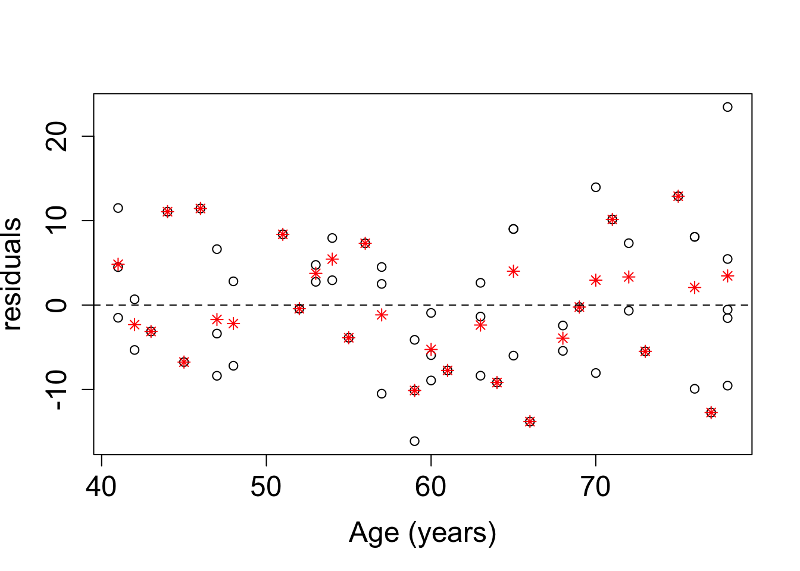

Linear Models
2021-2021
\(\newcommand{\prob}[1]{\text{P}\left\{#1\right\}}\) \(\newcommand{\mb}[1]{\boldsymbol{#1}}\) \(\newcommand{\E}[1]{\mbox{E}\left\{#1\right\}}\) \(\newcommand{\Ef}[2]{\mbox{E}_{#1}\left\{#2\right\}}\) \(\newcommand{\cov}[1]{\mbox{Cov}\left\{#1\right\}}\) \(\newcommand{\cor}[1]{\mbox{Cor}\left\{#1\right\}}\) \(\newcommand{\covf}[2]{\mbox{Cov}_{#1}\left\{#2\right\}}\) \(\newcommand{\var}[1]{\mbox{Var}\left\{#1\right\}}\) \(\newcommand{\varf}[2]{\mbox{Var}_{#1}\left\{#2\right\}}\) \(\newcommand{\ind}[0]{\perp \!\!\! \perp}\) \(\newcommand{\eps}[0]{\varepsilon}\) \(\newcommand{\SSE}[0]{\text{SSE}}\) \(\newcommand{\iid}[0]{\text{ i.i.d. }}\) \(\newcommand{\convDistr}[0]{\stackrel{d}{\longrightarrow}}\) \(\newcommand{\convProb}[0]{\stackrel{p}{\longrightarrow}}\) \(\newcommand{\QED}[0]{\null\nobreak\hfill\ensuremath{\blacksquare}}\) \(\newcommand{\MSE}[0]{\text{MSE}}\) \(\newcommand{\probf}[2]{\text{P}_{#1}\left\{#2\right\}}\) \(\newcommand{\HSim}[0]{\stackrel{H_0}{\sim}}\)
##
## Attaching package: 'dplyr'## The following objects are masked from 'package:stats':
##
## filter, lag## The following objects are masked from 'package:base':
##
## intersect, setdiff, setequal, unionHoofdstuk 1 Introduction
This course (Linear Models) is a classical treatment of linear models, which are among the most popular and simple models for statistical data analysis and prediction. The models describe the relationship between the mean of an outcome variable \(Y\) and one or more regressors \(x\) via a function that is linear in the parameters. The model thus focusses on the conditional expectation \(\E{Y \mid x}\). Here is a brief overview of the content of the course:
simple linear regression model: here the models are limited to a single regressor. In this chapter most of the concepts and theory will be presented so that in later chapters we can rely on many of the theoretical results of this chapter. Throughout the whole chapter, the methods will be illustrated by means of example datasets, and the meaning of the model and the statistical inference procedures will be demonstrated with Monte Carlo simulation studies. In particular, the following topics will be discussed:
the model and its interpretation
parameter estimation (ordinary least squares and maximum likelihood) and the properties of the estimators
sampling distributions of the estimators. They form the basis of statistical inference.
confidence intervals of the parameters
hypothesis tests related to the parameters
assessment of the model assumptions
the use of binary dummy regressors to mimic the two-sample problem (two-sample t-test)
association versus causation. We will give a brief introduction to causal inference.
linear regression models for prediction purposes
the multiple linear regression model: the simple linear regression model is extended to include more than one regressor. For many topics (e.g. parameter estimation, confidence intervals and hypopthesis tests) we will be able to refer to the previous chapter, which will make this chapter less theoretical. Quite some focus will be on the interpretation of the parameters and specific issues that are irrelevant for the simple linear regression model. These topics will be discussed:
the additive model and its interpretation
parameter estimation, confidence intervals and hypothesis testing (with a lot of references to the previous chapter)
interaction effects and the non-additive model
sum of squares and the ANOVA table
multicolinearity
assessment of the model assumptions
prediction modelling and model selection
design-related topics and causal inference. In this chapter we discuss in some more detail the importance of the study design and some further concepts in causal inference. In particular:
blocking and stratification
estimability
randomisation
confouders
causality, causal graphs, collapsibility
Analysis of variance (ANOVA). The approach taken is this course, is to embed anova models in regression models. So in this chapter you first learn about the conventional formulation of anova models, and subsequently how these models can be rewritten as linear regression models so that the theory and methods from the previous chapters become available. The following topics will be treated:
cell means and factor effects models and their reformulation as linear regression models
sum of squares and the ANOVA table
one way, two way and multiple way models
contrasts and multiple comparisons of means
This course is concluded with a chapter on reporting: how to write a good statistical report. This can be seen as a stand alone chapter and can be read at any time.
1.1 How to work through the course notes
These course notes are written with R Bookdown in R Studio, and rendered to an html file that is made available on GitHub. If you wish, you can convert the html to a pdf file. The best way to do this, is via the print function of your browser. Before doing so, you can best first collapse the sidebar (that contains the table of content).
This course is work in progress. It is a new course and the course notes are still work in progress. So every week there will be an update. If you access the course notes via the link to GitHub you will see the updates automatically.
Many data analyses examples are worked out in detail in the course notes, including the R code. When you access the course notes via GitHub, you can easily copy the R code and paste it to your local R software. Here is an example of a chunck of R code:
a<-1
b<-2
a+b## [1] 3If you now move your mouse towards the upper right corner of the box that contains the R code, then you will see an icon appearing in that corner:
 If you click on that icon, the content of the box will be copied to your clipboard so that you can paste it wherever you want (e.g. in a local R file).
If you click on that icon, the content of the box will be copied to your clipboard so that you can paste it wherever you want (e.g. in a local R file).
I actually advise that you also work with your own local R Markdown or Notebook file to which you copy some of the R code of the course notes so that you can play with the data and the R code yourself. All datafiles are also available on Blackboard.
Throughout the course there are several exercises. The introduction to the excercise, as well as the data set and some instructions are given, but you do not directly get to see the solution. However, there is a option to expand the html so that the solution becomes visible. This should invite you to first try to make the exercise yourself (in a local R Markdown or Notebook file) before looking at the solution in the course notes. Here is an illustration:
Exercise
Consider the following data.
dataset<-data.frame(y=c(1,2,3),
x=c(5,6,7))Make a scatter plot of \(y\) versus \(x\).
Try to make this exercise yourself. If you are ready you can expand this page and look at a solution
Here is a solution:
plot(dataset$y,dataset$x,
xlab="x",
ylab="y")
1.2 Two versions of this course: OC and DL
As for all courses in our Master of Statistics and Data Science program, each course has two versions: the on-campus (OC) and the distance learning (DL) versions.
The course notes are the same for both groups of students. Each group, however, has another Blackboard course site at which you can find all files and information. I keep these two Blackboard sites separate because the contact modes and hours are different:
the OC students have live lectures (either in class, on campus, if permitted in corona times, or online) and self study assignments followed by online Q&A sessions. Their lectures and Q&A sessions are scheduled in their official course schedule.
the DL students will get access to web lectures and they can watch them at their own pace. On Blackboard I will suggest a time schedule. There are also online Q&A sessions which give the students the opportunity to ask questions to the lecturer. The dates of the Q&A sessions are in the Blackboard Calendar.
The project assignment is the same for the DL and OC students.
1.3 Communication
On Blackboard there is a discussion forum that can be used for asking questions.
Questions can also be asked during the Q&A sessions, and the OC students can of course also ask questions in class (either physically when we are on-campus, or in the virtual class room when we are online).
You are also welcome to send emails to the lecturer, but the discussion forum is preferred so that other students can also learn from the answers to the questions.
1.4 Software
In the course notes all data analyses are demonstrated with the R software, but on Blackboard also documentation on the SAS software will be provided. You will also have to learn how to perform regression analysis and ANOVA with the SAS software.
Hoofdstuk 2 Simple Linear Regression Analysis
Example (Galton's height data)
As a first example, we consider the original dataset from Francis Galton, who invented regression by looking at this dataset. We obtained the data from https://dataverse.harvard.edu/file.xhtml?persistentId=doi:10.7910/DVN/T0HSJ1/LKC7PJ&version=1.1 Here is the reference to the orginal paper of Francis Galton from 1886.
Galton, F. (1886). Regression Towards Mediocrity in Hereditary Stature. Journal of the Anthropological Institute, 15, 246-263
Galton<-read.csv("Data/Galton.tab",sep="\t")
head(Galton)## family father mother gender height kids male female
## 1 1 78.5 67.0 M 73.2 4 1 0
## 2 1 78.5 67.0 F 69.2 4 0 1
## 3 1 78.5 67.0 F 69.0 4 0 1
## 4 1 78.5 67.0 F 69.0 4 0 1
## 5 2 75.5 66.5 M 73.5 4 1 0
## 6 2 75.5 66.5 M 72.5 4 1 0glimpse(Galton)## Rows: 898
## Columns: 8
## $ family <fct> 1, 1, 1, 1, 2, 2, 2, 2, 3, 3, 4, 4, 4, 4, 4, 5, 5, 5, 5, 5, 5,…
## $ father <dbl> 78.5, 78.5, 78.5, 78.5, 75.5, 75.5, 75.5, 75.5, 75.0, 75.0, 75…
## $ mother <dbl> 67.0, 67.0, 67.0, 67.0, 66.5, 66.5, 66.5, 66.5, 64.0, 64.0, 64…
## $ gender <fct> M, F, F, F, M, M, F, F, M, F, M, M, F, F, F, M, M, M, F, F, F,…
## $ height <dbl> 73.2, 69.2, 69.0, 69.0, 73.5, 72.5, 65.5, 65.5, 71.0, 68.0, 70…
## $ kids <int> 4, 4, 4, 4, 4, 4, 4, 4, 2, 2, 5, 5, 5, 5, 5, 6, 6, 6, 6, 6, 6,…
## $ male <dbl> 1, 0, 0, 0, 1, 1, 0, 0, 1, 0, 1, 1, 0, 0, 0, 1, 1, 1, 0, 0, 0,…
## $ female <dbl> 0, 1, 1, 1, 0, 0, 1, 1, 0, 1, 0, 0, 1, 1, 1, 0, 0, 0, 1, 1, 1,…skim(Galton)| Name | Galton |
| Number of rows | 898 |
| Number of columns | 8 |
| _______________________ | |
| Column type frequency: | |
| factor | 2 |
| numeric | 6 |
| ________________________ | |
| Group variables | None |
Variable type: factor
| skim_variable | n_missing | complete_rate | ordered | n_unique | top_counts |
|---|---|---|---|---|---|
| family | 0 | 1 | FALSE | 197 | 185: 15, 166: 11, 66: 11, 130: 10 |
| gender | 0 | 1 | FALSE | 2 | M: 465, F: 433 |
Variable type: numeric
| skim_variable | n_missing | complete_rate | mean | sd | p0 | p25 | p50 | p75 | p100 | hist |
|---|---|---|---|---|---|---|---|---|---|---|
| father | 0 | 1 | 69.23 | 2.47 | 62 | 68 | 69.0 | 71.0 | 78.5 | ▁▅▇▂▁ |
| mother | 0 | 1 | 64.08 | 2.31 | 58 | 63 | 64.0 | 65.5 | 70.5 | ▂▅▇▃▁ |
| height | 0 | 1 | 66.76 | 3.58 | 56 | 64 | 66.5 | 69.7 | 79.0 | ▁▇▇▅▁ |
| kids | 0 | 1 | 6.14 | 2.69 | 1 | 4 | 6.0 | 8.0 | 15.0 | ▃▇▆▂▁ |
| male | 0 | 1 | 0.52 | 0.50 | 0 | 0 | 1.0 | 1.0 | 1.0 | ▇▁▁▁▇ |
| female | 0 | 1 | 0.48 | 0.50 | 0 | 0 | 0.0 | 1.0 | 1.0 | ▇▁▁▁▇ |
The dataset contains data on heights of parents and their adult children; there can be more than one child per family. For our purpose we will select fathers and one son (we will select the first son that appears in the family).
Galton.sons<-Galton %>%
filter(gender=="M") %>%
group_by(family) %>%
slice(1) %>%
ungroup %>%
mutate(father.cm=father*2.54,
son.cm=height*2.54) %>%
select(father.cm, son.cm)
glimpse(Galton.sons)## Rows: 173
## Columns: 2
## $ father.cm <dbl> 199.390, 175.260, 175.260, 175.260, 175.260, 176.530, 175.2…
## $ son.cm <dbl> 185.928, 180.848, 190.500, 177.800, 185.420, 179.070, 180.3…ggplot(Galton.sons,
aes(x=father.cm, y=son.cm)) +
geom_point(color="blue") +
xlab("length of father (cm)") + ylab("length of son (cm)") +
theme(axis.title=element_text(size=15), axis.text = element_text(size=15))
This scatter plot suggests a possitive correlation between the heights of the father and the son.
cor(Galton.sons$father.cm, Galton.sons$son.cm)## [1] 0.5022938In this course, however, we are not only interested in the correlation, but we want to quantify how the expected (or average) height of sons varies with the age of the father.
In the context of regression analysis we will use the following terminology:
height of son is the outcome or response (or response variable) or dependent variable. This will be denoted by \(Y\).
height of father is the regressor, covariate or independent variable. This will be denoted by \(x\).
One way of looking at the problem, is to consider the outcomes that correspond to fathers of a given height, as a population. In this way, for example, the heights of sons of fathers of height \(172.72\)cm can be considered as a random sample of outcomes from the population of heights of sons of fathers of height \(172.72\)cm. We can apply this reasoning for all heights of fathers included in the dataset, and in a more abstract way we can think of samples of outcomes for each value of the regressor.
Galton.sons %>%
filter(father.cm==172.72) %>%
ggplot(aes(x=father.cm,y=son.cm)) +
geom_boxplot() +
geom_jitter(position = position_jitter(0.2)) +
ylab("length of son (cm)") +
theme(axis.title=element_text(size=15), axis.text = element_text(size=15),
axis.title.x=element_blank(),axis.text.x=element_blank())
We will use the following notation:
\(n\): total number of observations (subjects, elements) in the dataset.
\(x_i\): the value of the regressor of observation \(i=1,\ldots, n\)
\(Y_i\): the outcome of observation \(i=1,\ldots, n\).
Since every \(x_i\) can identify another population, we say that \(Y_i\) is a random outcome from the population with (cumulative) distribution function (CDF) \[ F_i(y)=F(y;x_i,\mb\beta), \] i.e. the distribution is determined by \(x_i\) and possibly by a parameter vector \(\mb\beta\). We also assume that all \(n\) outcomes are mutually independent. Note that we do not say that the \(n\) outcomes are i.i.d. (identically and independently distributed), because not all \(F_i\) coincide.
Regression analysis is a method that allows to study the effect of a regressor on the mean outcome. We therefore also introduce a notation for the mean of the distribution \(F_i\), \[ \mu_i = \E{Y_i} = \Ef{F_i}{Y_i} = \int_{-\infty}^{+\infty} y dF(y;x_i,\mb\beta) = \E{Y_i \mid x_i}. \] This notation stresses that \(\mu_i\) is the mean of \(Y_i\) and that this mean depends on the value of the regressor \(x_i\) because the distribution of \(Y_i\) depends on \(x_i\). Therefore, \(\mu_i=\E{Y_i \mid x_i}\) is the conditional mean of the outcome, given \(x_i\). To stress that the conditional mean is a function of the regressor and possibly of a parameter \(\mb\beta\) we write \[ m(x;\mb\beta) = \E{Y \mid x}. \]
In the two previous paragraphs we actually gave a generic description of a statistical model. We repeat here the description, with in slightly more general fashion.
For a given \(x_i\), we provide the conditional distribution of the outcome, \[ Y_i \mid x_i \sim F_i(\cdot;x_i,\mb\beta,\mb\nu) \] in which \(\mb\beta\) and \(\mb\nu\) are two parameter vectors.
The conditional mean of this distribution is described as \[ \E{Y_i\mid x_i}=m(x_i;\mb\beta). \]
The \(n\) outcomes \(Y_i\) are mutually independent.
Consider the follow special cases:
Suppose there are no parameters \(\mb\beta\) and \(\mb\nu\) and the functions \(m\) and \(F_i\) are not known. Then the model imposes no restriction on the conditional distribution \(Y_i \mid x_i\). This is a nonparametric model.
Suppose that the function \(m\) is known, up to the parameter vector \(\mb\beta\), but the CDFs \(F_i\) have no further restrictions (it does of course satisfy the restriction \(\E{Y_i\mid x_i}=m(x_i;\mb\beta)\)). Then the statistical model only imposes restrictions on the conditional mean, but leaves other aspects of the conditional distribution unspecified. This is a semiparametric model.
Suppose that the function \(m\) is known, up to the parameter vector \(\mb\beta\), and that the CDFs \(F_i\) are also known, up to the parameter vector \(\mb\nu\). In this case, the \(n\) CDFs \(F_i\) are often equal to one another, i.e. \(F_i=F\). Of course, as for the semiparametric model, the CDF \(F\) must be compatible with the restriction \(\E{Y_i\mid x_i}=m(x_i;\mb\beta)\). This model is known as a parametric model. It basically specifies the full conditional distribution up to finite dimensional parameter vectors \(\mb\beta\) and \(\mb\nu\).
With respect to the parametric models: if the interest is in the model \(\E{Y_i\mid x_i}=m(x_i;\mb\beta)\), i.e. the focus is on parameter \(\mb\beta\), then we call the parameter \(\mb\nu\) a nuisance parameter.
In later sections we will sometimes refer to semiparametric and parametric models, and then their meaning may become clear.
The general regression model is illustrated in Figure 2.1 (left). The focus of a regression analysis is the estimation of the function \(m(x;\mb\beta)\). If the function \(m\) is known, then this reduces to the estimation of the parameter \(\mb\beta\) using the sample observations. Based on the estimates, regression analysis also aims to formulate conclusions on the relation between the regressor and the conditional mean of the outcome. Sometimes the estimated regression model may also be used for predicting an outcome for a given value of the regressor. These topics will all be discussed later in this course.
![Illustration of the regression model. The black line represents the function $m$. The red points are observed outcomes, sampled from the conditional distribution of $Y$ given $x=160$. The red line shows the shape of the density function of this conditional distribution. The blue points are observed outcomes, sampled from the conditional distribution of $Y$ given $x=200$. The blue line shows the shape of the density function of this conditional distribution. Left: $m$ is a non-linear function and the conditional distributions have different shapes. Middle: $m$ is a non-linear function and the conditional distribution functions have equal shapes. Right: $m$ is a linear function and the conditional distribution functions have equal shapes (normal distributions).](DASM2_files/figure-html/RegModel-1.png)
Figure 2.1: Illustration of the regression model. The black line represents the function \(m\). The red points are observed outcomes, sampled from the conditional distribution of \(Y\) given \(x=160\). The red line shows the shape of the density function of this conditional distribution. The blue points are observed outcomes, sampled from the conditional distribution of \(Y\) given \(x=200\). The blue line shows the shape of the density function of this conditional distribution. Left: \(m\) is a non-linear function and the conditional distributions have different shapes. Middle: \(m\) is a non-linear function and the conditional distribution functions have equal shapes. Right: \(m\) is a linear function and the conditional distribution functions have equal shapes (normal distributions).
with \(\eps_i \iid F_\eps(\cdot;\mb\nu)\), with \(F_\eps(\cdot;\mb\nu)\) the CDF of \(\eps_i\), \(\mb\nu\) a parameter vector and \[ \E{\eps_i}=\E{\eps_i\mid x_i}=0. \] For the latter assumption, we find a useful property: \[ \E{Y\mid x}=m(x;\mb\beta) \] i.e. it allows to interpret \(m(x;\mb\beta)\) as the conditional mean. The stochastic variable \(\eps_i\) is often referred to as the error term. The model thus suggests that the outcome can be decomposed into two components: a systematic component, \(m(x_i;\mb\beta)\), and a stochastic component (or random component, or error term) \(\eps_i\). The latter gives the deviation between the outcome \(Y_i\) and the systematic component \(m(x_i;\mb\beta)\).
It is important, however, to note that this decomposition often does not agree with how the outcomes are generated or realised: the variability of the outcomes \(Y_i\) about the conditional mean \(m(x_i;\mb\beta)\) is often inherently present in the population (e.g. biological variability). In this sense, \(\eps_i\) may not be looked at as an error on the measurement. In other cases, however, part of the variability in \(Y_i\) may be due to imprecise measurements and then \(\eps_i\) can (at least partly) be considered as a random error term.
Note that the assumption \(\eps_i \iid F_\eps(\cdot;\mb{\nu})\) implies that all error terms have the same distribution and hence, for a fixed \(\sigma^2\geq 0\), \[ \var{\eps_i} = \var{\eps_i \mid x_i} = \sigma^2 \] for all \(i=1,2,\ldots, n\). This restriction on the variance is referred to as the assumption of homoskedasticiteit or constant variance. The variance \(\sigma^2\) is called the residual variance.
In this course we only discuss linear regression analysis, for which the function \(m(x;\mb\beta)\) is restricted to linear functions of \(\mb\beta\): \[ m(x;\mb\beta) = \beta_0 + \beta_1x, \] with \(\mb{\beta}^t=(\beta_0, \beta_1)\).
This equation represents a linear line which is referred to as the regression line. We write model (2.1) now as \[\begin{equation} Y_i = \beta_0 + \beta_1x_i + \eps_i \tag{2.2} \end{equation}\]with \(\eps_i \iid F_\eps(\cdot;\mb\nu)\) and \(\E{\eps_i}=\E{\eps_i\mid x_i}=0\). This is called the simple linear regression model. See also Figure 2.1 (right).
The interpretation of the parameter \(\beta_1\) follows from the identity \[ \E{Y\mid x+1} - \E{Y\mid x} = \left(\beta_0+\beta_1(x+1)\right)-\left(\beta_0+\beta_1 x\right) = \beta_1 . \] The parameter \(\beta_1\) is thus the average increase in the outcome when the regressor increases with one unit. This parameter is also the slope of the regression line. The parameter is often referred to as the regression coefficient.
The interpretation of the parameter \(\beta_0\) follows from the identity \[ \E{Y\mid x=0} = \beta_0+\beta_1 \times 0 = \beta_0 . \] The parameter \(\beta_0\) is thus the average outcome when the regressor takes value zero. It is the intercept of the regression line.
Sometimes the situation \(x=0\) does not have a physical meaning or it falls outside of the scope of the model (i.e. the range of \(x\)-values that forms the focus of the data analysis). For this reason, the regression model is sometimes formulated as \[ Y_i = \beta_0 + \beta_1(x_i-\bar{x}) + \eps_i \] with \(\bar{x}\) the sample mean of the regressor observations in the dataset, \(\eps_i \iid F_\eps(\cdot;\mb\nu)\) and \(\E{\eps_i}=\E{\eps_i\mid x_i}=0\). The interpretation of \(\beta_0\) now becomes \(\beta_0=\E{Y\mid x=\bar{x}}\). Since the sample mean \(\bar{x}\) is often withing the scope of the model, the parameter \(\beta_0\) now has a real meaning. The interpretation of \(\beta_1\) remains unchanged.
In the Galton example, the scope is approximately \([150 \text{cm},200 \text{cm}]\).
In this chapter we discuss methods for the estimation of the parameters in the linear regression model (2.2). We will find the sampling distribution of the parameter estimators. This will form the basis for hypothesis tests and for confidence intervals.
2.1 Interpretation via simulations
Regression model (2.2) thus gives an interpretation to the \(\beta\) parameters via the conditional expectation of the outcomes. In this section we provide an interpretation via the principle of repeated sampling, which can be easily demonstrated with Monte Carlo simulations. Since this is the first simulation in this course, we shall go through it step by step.
We start with model (2.2): \[ Y_i = \beta_0 + \beta_1x_i + \eps_i \] with \(\eps_i \iid F_\eps(\cdot;\mb\nu)\) and \(\E{\eps_i}=\E{\eps_i\mid x_i}=0\). We set \(F_\eps\) to the normal distribution with mean zero and variance \(\sigma^2\).
We start with the simulation of a sample of 5 outcomes (son's heights) at \(\mb{x}^t=(165, 170, 175, 180, 185)\) (father's heights).
Before we can start the simulations, we need to set the parameters to specific values. We choose: \[ \beta_0=90 \;\;\; \beta_1=0.5 \;\;\; \sigma=25. \] Thus, we simulate as if we known the truth (i.e. the population). In this context, we refer to this model as the data generating model.
set.seed(724245)
x<-c(165,170,175,180,185) # five father's heights
x## [1] 165 170 175 180 185eps<-rnorm(5,sd=5) # random sample of 5 error terms
eps## [1] 2.6552611 -4.3398292 2.1952809 6.1667742 -0.9250292y<-90+0.5*x+eps # random sample van uitkomsten
y ## [1] 175.1553 170.6602 179.6953 186.1668 181.5750The following R code gives Figure 2.2.
plot(x,y,cex.axis=1.5,cex.lab=1.5)
abline(c(90,0.5),col=2)
Figure 2.2: Scatter plot of 1 simulated sample from the (data generating) regression model. The red line is the linear regression model with the true parameter values.
Next we repeat this procedure (experiment) multiple times. Each time other outcomes will be generated. The following R code generates \(N=100\) repeated experiments, each with \(n=5\) outcomes as described earlier. The resulst are visualised in Figure 2.3.
set.seed(254111)
N<-N100 # number of repeated experiments
x<-c(165,170,175,180,185) # five father's heights
y<-90+0.5*x+rnorm(5,sd=5) # random sample of 5 outcomes
plot(x,y,cex.axis=1.5,cex.lab=1.5, ylim=c(160,195))
abline(c(90,0.5),col=2)
Data<-data.frame(experiment=1,x=x,y=y)
for(experiment in 2:N) {
y<-90+0.5*x+rnorm(5,sd=5) # random sample of 5 outcomes
points(x,y,col=experiment)
Data<-rbind(Data,cbind(experiment,x,y))
}
Figure 2.3: Scatter plot of \(N=100\) simulated samples (experiments) from a regression model. Each color corresponds to a repeated experiment. The red line is the linear regression line with the true parameter values.
Now we look at the histograms of the repeated samples; each histogram corresponds to another value of \(x\). See Figure 2.4.
par(mfrow=c(2,3))
for(i in 1:5) {
y<-Data$y[Data$x==x[i]]
hist(y,main=paste("x=",x[i]),xlab="y")
abline(v=90+0.5*x[i],col=2,lwd=2)
abline(v=mean(y),col=4,lty=2,lwd=2)
}
par(mfrow=c(1,1))
Figure 2.4: Histogram of the \(N=100\) repeated experiments. Each histogram corresponds to another value of \(x\). The red vertical lines show the average outcomes according to the true regression model and the blue dashed lines are the averages of the repeated outcomes at the corresponding temperatures.
Every histogram in Figure 2.4 approximately shows a normal distribution. This is expected, because we have sampled from a normal distribution for each value of \(x\). In particular, for a given value of \(x\), we have sampled the outcomes \(Y\) from the distribution \(N(90+0.5x,25)\).
Figure 2.4 also shows the sample means of the N=100 repeated outcomes for each given \(x\). If \(N\) is very large, then these sample means are approximately equal to the corresponding expected values \(\E{Y\mid x}=\beta_0+\beta_1x\). Also these expected values (with the given parameter values) are depicted in the graph; these are the points on the true regression line. Both lines are very close to one another. If \(N\) were much larger then 100, we would expect that the lines would be even closer to one another. The next R code gives the numerical values.
Results<-data.frame(x=NA,EmpMean=NA,ExpectedValue=NA,
EmpVariance=NA,Variance=NA)
for(i in 1:5) {
y<-Data$y[Data$x==x[i]]
Results[i,]<-c(x[i],round(mean(y),2),90+0.5*x[i],
round(var(y),2),25)
}
Results## x EmpMean ExpectedValue EmpVariance Variance
## 1 165 172.63 172.5 22.46 25
## 2 170 174.69 175.0 27.60 25
## 3 175 177.92 177.5 23.17 25
## 4 180 181.08 180.0 24.82 25
## 5 185 182.94 182.5 25.68 25This R code also shows the sample variances of the simulated outcomes for the 5 values of \(x\). The true variance according the data generating model equals 25. Also here we see a good agreement.
2.2 Least squares estimators
Consider again model (2.2), \[ Y_i = \beta_0 + \beta_1x_i + \eps_i \] with \(\eps_i \iid F_\eps(\cdot;\mb\nu)\) and \(\E{\eps_i}=\E{\eps_i\mid x_i}=0\).
The least squares estimation method can be applied without knowledge of the exact shape of the distribution of the error term. In this sense, the model is an example of semiparametric statistical model: the conditional mean is parameterised (\(\beta_0\) and \(\beta_1\)) and posesses a restriction on the conditional distributions, but the other moments of the conditional outcome distribution (or error term distribution) remain unspecified.
In this section we aim at estimating the regression parameters \(\beta_0\) and \(\beta_1\), which will be denoted by \(\hat\beta_0\) and \(\hat\beta_1\). The estimated regression line should come as close as possible to the observed outcomes in the sample. We will need a measure for the distance between the estimated regression line and the observed sample data. For given estimates \(\hat\beta_0\) and \(\hat\beta_1\), the estimated regression line is given by \[ \hat{m}(x)=m(x;\hat{\mb\beta})= \hat\beta_0+\hat\beta_1 x. \] This line is sometimes referred to as the fitted regression line. For given \(x\), this gives an estimate of the conditional mean of the outcome \(Y\). For the \(n\) sample observations, the points on the estimated regression line are denoted by \[ \hat{Y}_i = \hat{m}(x_i)=m(x_i;\hat{\mb\beta})=\hat\beta_0+\hat\beta_1 x_i \;\;\; i=1,\ldots, n. \] The \(\hat{Y}_i\)s are often called the predictions of the outcomes, but in many cases this is a misleading terminology because the points on the estimated regression line should in the first place not be considered as predictions, but rather as estimates of the conditional mean. On the other hand, if no extra information is available, then \(\hat{m}(x)\) is a good prediction for an outcome at regression value \(x\) (see further). In this course we will stick to the conventional terminology (predictions), but in the first place we consider them as estimates of the conditional means.
Good parameter estimates \(\hat\beta_0\) and \(\hat\beta_1\) should make the predictions \(\hat{Y}_i\) come as close as possible to the observed outcomes \(Y_i\). This can be quantified by the least squares criterion
\[\begin{equation} \SSE(\hat{\mb\beta}) = \sum_{i=1}^n \left(Y_i - \hat{Y}_i\right)^2 = \sum_{i=1}^n \left(Y_i - m(x_i;\hat{\mb\beta})\right)^2. \tag{2.3} \end{equation}\]SSE is the abbreviation of sum of squares of the error, which is also referred to as the residual sum of squares or the sum of squared errors. This brings us to the following definition.
We use the abbreviation LSE for the least squares estimator.
Figure 2.5 shows three datasets with fitted regression lines and with the indication of \(Y_i - \hat{Y}_i\). The deviation \(Y_i - \hat{Y}_i\) is called the residual, which is often written as \[ e_i = Y_i - \hat{Y}_i \;\text{ or }\; e_i(\hat{\mb{\beta}}) =Y_i -m(x_i;\hat{\mb{\beta}}). \] With this notation we write \[ \SSE=\sum_{i=1}^n e_i^2 \;\text{ or }\; \SSE(\hat{\mb{\beta}})=\sum_{i=1}^n e_i^2(\hat{\mb{\beta}}). \]
![Illustration of the estimation of the regession line. The black line shows the function $m$; this function is in practice not known and need to be estimated based on five sample observations (red points). The estimated regression line is depicted as the red dashed line. The vertical lines connect the observed outcomes $y_i$ with the predictions. The lengths of these vertical lines form the basis for SSE. Each of the three graphs start with another (randomly selected) sample. Left: estimates of $\beta_0$ and $\beta_1$ are $51.9$ and $0.71$ with SSE$=52.75$. Middle: $133.3$ and $0.26$ with SSE$=35.94$. Right: $122.3$ and $0.31$ with SSE$=3.18$.](DASM2_files/figure-html/RegLSE-1.png)
Figure 2.5: Illustration of the estimation of the regession line. The black line shows the function \(m\); this function is in practice not known and need to be estimated based on five sample observations (red points). The estimated regression line is depicted as the red dashed line. The vertical lines connect the observed outcomes \(y_i\) with the predictions. The lengths of these vertical lines form the basis for SSE. Each of the three graphs start with another (randomly selected) sample. Left: estimates of \(\beta_0\) and \(\beta_1\) are \(51.9\) and \(0.71\) with SSE\(=52.75\). Middle: \(133.3\) and \(0.26\) with SSE\(=35.94\). Right: \(122.3\) and \(0.31\) with SSE\(=3.18\).
Before we continue, we introduce the matrix notation for the model. We introduce the following notation:
parameter vector \(\mb\beta^t=(\beta_0, \beta_1)\) and estimate \(\hat{\mb\beta}^t=(\hat\beta_0, \hat\beta_1)\)
outcome vector \(\mb{Y}^t=(Y_1,\ldots, Y_n)\)
design matrix (\(n\times 2\) matrix) \[ \mb{X}=\begin{pmatrix} 1 & x_1 \\ 1 & x_2 \\ \vdots & \vdots \\ 1 & x_n \end{pmatrix}. \] The \(i\)th row of \(\mb{X}\) is represented by \(\mb{x}_i^t=(1,x_i)\).
error vector \(\mb{\eps}^t=(\eps_1,\ldots, \eps_n)\).
With the vector and matrix notation we rewrite model (2.2) as \[ Y_i = \mb{x}_i^t\mb\beta+\eps_i \] or as \[ \mb{Y} = \mb{X}\mb\beta + \mb{\eps} \] with \(\eps_i \iid\) and \(\E{\eps_i}=\E{\eps_i \mid x_i}=0\) and \(\var{\eps_i}=\sigma^2\).
With this notation we write SSE from (2.3) as \[ \SSE(\hat{\mb\beta})=\Vert \mb{Y} - \mb{X}\hat{\mb\beta}\Vert^2 \] and the LSE from Definition 2.1 becomes \[ \hat{\mb\beta} = \text{ArgMin}_{\mb\beta} \SSE(\mb\beta) = \text{ArgMin}_{\mb\beta} \Vert \mb{Y} - \mb{X}\mb\beta\Vert^2. \]
The solution of the minimisation problem that results in the LSE is given next and formulated as a theorem.
Proof
First we show that \(\hat{\mb\beta} = (\mb{X}^t\mb{X})^{-1}\mb{X}^t\mb{Y}\).
We find the LSE by means of vector differentiation (see Appendix A).
First we write \[\begin{eqnarray*} \|\mb{Y} - \mb{X}\mb\beta \|^2 &=& (\mb{Y} - \mb{X} \mb\beta)^t (\mb{Y}-\mb{X}\mb\beta)\\ &=& \mb{Y}^t\mb{Y} - \mb\beta^t \mb{X}^t \mb{Y} - \mb{Y}^t \mb{X} \mb\beta + \mb\beta^t \mb{X}^t \mb{X} \mb\beta . \end{eqnarray*}\]Applying vector differentiation, we find \[ \frac{d}{d\mb\beta} \|\mb{Y} - \mb{X} \mb\beta\|^2 = -2\mb{X}^t\mb{Y} + 2\mb{X}^t\mb{X} \mb\beta . \]
The LSE of \(\mb\beta\) satisfies
\[\begin{eqnarray*} \frac{d}{d\mb\beta} \|\mb{Y}- \mb{X} \mb\beta\|^2 &=& 0\\ &\Updownarrow& \\ \mb{X}^t \mb{X} \mb\beta &=& \mb{X}^t \mb{Y} \end{eqnarray*}\]The solution (\(\mb{X}\) has full rank and hence \(\mb{X}^t\mb{X}\) is invertible) is thus given by \[ \hat{\mb\beta} = (\mb{X}^t\mb{X})^{-1} \mb{X}^t \mb{Y}. \] For demonstrating that this estimate minimises the least squares criterion, we must show that the matrix of partial derivatives of second order is positive definite. \[ \frac{d^2}{d\mb\beta d\mb\beta^t}\|\mb{Y}- \mb{X} \mb\beta\|^2 = \frac{d}{d\mb\beta} (-2\mb{X}^t\mb{Y} + 2\mb{X}^t\mb{X} \mb\beta) = 2\mb{X}^t\mb{X}. \] The \(2 \times 2\) matrix \(\mb{X}^t\mb{X}\) is positive definite because \(\mb{X}\) is of full rank.
Finally we have to prove that we have a unique solution.
Suppose that there are two different solutions (say \(\hat{\mb\beta}_1\) and \(\hat{\mb\beta}_2\) such that \(\hat{\mb\beta}_1 \neq \hat{\mb\beta}_2\)); then it holds that
\[\begin{eqnarray*} \mb{X}^t\mb{Y} &=& \mb{X}^t \mb{X} \hat{\mb\beta}_1\\ &=& \mb{X}^t \mb{X} \hat{\mb\beta}_2. \end{eqnarray*}\]Hence, \(\mb{X}^t\mb{X}(\hat{\mb\beta}_1 - \hat{\mb\beta}_2)=0\). Because \(\mb{X}^t\mb{X}\) is of full rank, the unique solution of the system of equation given by \(\mb{X}^t\mb{X}\mb{v} = 0\) is provided by the null solution \(\mb{v} = \mb{0}\). Therefore the following equality must hold true: \(\hat{\mb\beta}_1 -\hat{\mb\beta}_2 = \mb{0}\). Hence, the supposition \(\hat{\mb\beta}_1 \neq \hat{\mb\beta}_2\) gives a contradiction and hence \(\hat{\mb\beta}_1=\hat{\mb\beta}_2\) must be true, i.e. there is only one unique solution.
If we work out the matrix formulation for \(\hat{\mb\beta}=(\mb{X}^t\mb{X})^{-1}\mb{X}^t\mb{Y}\) we find
\[\begin{eqnarray*} \hat\beta_0 &=& \bar{Y} - \hat\beta_1 \bar{x}\\ \hat\beta_1 &=& \frac{\sum_{i=1}^n (Y_i-\bar{Y})(x_i-\bar{x})}{\sum_{i=1}^n (x_i-\bar{x})^2}. \end{eqnarray*}\]This solution could also be found directly by computing the partial derivatives of SSE w.r.t. the two parameters, setting these derivatives to zero and solving the system of equations for the two parameters (later we will see that our solution via vector differentiation is more general and also applies to multiple linear regression).
\[\begin{eqnarray*} \frac{\partial}{\partial \beta_0} \SSE(\mb\beta) &=& 0\\ \frac{\partial}{\partial \beta_1} \SSE(\mb\beta) &=& 0. \end{eqnarray*}\]This gives
\[\begin{eqnarray} \frac{\partial}{\partial \beta_0} \SSE(\mb\beta) &=& -2\sum_{i=1}^n (Y_i - \beta_0-\beta_1 x_i) =0 \tag{2.4} \\ \frac{\partial}{\partial \beta_1} \SSE(\mb\beta) &=& -2\sum_{i=1}^n x_i(Y_i - \beta_0-\beta_1 x_i)=0. \tag{2.5} \end{eqnarray}\]Equations (2.4) and (2.5) are called the estimating equations. In the context of LSE for linear regression models they are also known as the normal equations.
Example (Galton's height data)
We estimate the parameters of the regression line for Galton's data.
m<-lm(son.cm~father.cm,data=Galton.sons)
m##
## Call:
## lm(formula = son.cm ~ father.cm, data = Galton.sons)
##
## Coefficients:
## (Intercept) father.cm
## 89.8182 0.5077The estimated (or fitted) regression line is thus given by \[ \hat{m}(x) = 89.8 + 0.51 x. \]
Figure 2.6 shows the scatter plot and the fitted regression line. Sometimes the fitted regression line is represented as \[ \hat{y}_i = 89.8 + 0.51 x_i . \] Interpretation: if the height of the fathers increases with 1cm, then the average height of their sons is estimated to increase with \(0.5\)cm.
The intercept, however, has no direct physical interpretation because there are no fathers of height 0cm. This issue can be resolved by first centering the regressor. This is illustrated next.
Galton.sons<-Galton.sons %>%
mutate(father.cm.centered=father.cm-mean(father.cm))
mean(Galton.sons$father.cm)## [1] 175.4905mean(Galton.sons$father.cm.centered)## [1] 6.242341e-15m2<-lm(son.cm~father.cm.centered,data=Galton.sons)
m2##
## Call:
## lm(formula = son.cm ~ father.cm.centered, data = Galton.sons)
##
## Coefficients:
## (Intercept) father.cm.centered
## 178.9070 0.5077First note that the estimate of the slope remains unchanged after centering the regressor. The intercept is now estimanted by \(\hat\beta_0=178.9\). Hence, when the centered regressor equals 0, i.e. when fathers have average height (175.5cm), their sons have an estimated average height of \(178.9\)cm.

Figure 2.6: Scatter plot of the Galton data and the fitted regression line (black). The red line is the diagonal line.
An historical note: Figure 2.6 shows the fitted regression line, but also the diagonal line. If the fitted regression line would coincide with the diagonal, then this would indicate that the average height of sons equals the height of their fathers. However, this is obviously not the case for Galton's dataset. From the graph we see that the smaller fathers have sons that are on average taller than them. On the other hand, the taller fathers have sons that are on average smaller than them. In 1886 Galton also observed this phenomenon, which he called regression towards mediocrity. In his 1886 paper he develop the basis of modern regression analysis (without the statistical inference); the term regression comes from his paper on the analysis of heights of parents and children. Nowadays, regression towards mediocrity is known as regression to the mean.
Finally, note that the estimates computed for this example, do not give any appreciation of the (im)precision with which they were estimated. To what extent can we thrust these estimates? To answer that question, we need the sampling distribution of the estimators. This will be discussed later in this course.
Exercise: blood pressure
In a small dose-finding study of a blood pressure reducing drug, 40 high blood pressure patients (systolic blood pressure at least 150 mmHg) were randomised over 4 concentrations of the active compound (arginine) in the drug: 0, 2, 5 and 10 mg per day. The outcome is the systolic blood pressure reduction after 2 months, measured in mmHg. The data can be read as shown in the next chunck of R code.
load("Data/BloodPressure.RData")Fit a linear regression to the data and interpret the regression coefficient.
Try to make this exercise yourself. If you are ready you can expand this page and look at a solution
First we explore the dataset.
ggplot(BloodPressure,
aes(x=dose, y=bp.reduction)) +
geom_point(color="blue") +
xlab("dose (mg / day") + ylab("systolic blood pressure reduction (mmHg)") +
theme(axis.title=element_text(size=15), axis.text = element_text(size=15))
Next we fit the linear regression model.
m.bloodpressure<-lm(bp.reduction~dose, data=BloodPressure)
m.bloodpressure##
## Call:
## lm(formula = bp.reduction ~ dose, data = BloodPressure)
##
## Coefficients:
## (Intercept) dose
## 0.03304 1.78634From the output we read \(\hat\beta_1=\) 1.7863436. Hence, we conclude that we estimate that on average the systolic blood pressure reducses with 1.8mmHg over a period of two months, with an increase of the daily dose of 1mg.
The next graph shows the estimated regression line.
ggplot(BloodPressure,
aes(x=dose, y=bp.reduction)) +
geom_point(color="blue") +
xlab("dose (mg / day") + ylab("systolic blood pressure reduction (mmHg)") +
theme(axis.title=element_text(size=15), axis.text = element_text(size=15)) +
geom_abline(intercept=m.bloodpressure$coefficients[1],
slope=m.bloodpressure$coefficients[2]) 
2.3 Properties of the Least Squares Estimator
2.3.1 Mean and variance of the LSE
The next theorem gives two important properties of the LSE.
Theorem 2.2 (Mean and variance of the LSE) Assume that model (2.2) is correct and that rank(\(\mb{X}\))=\(2\) (\(2\leq n\)). Then the following holds
\(\E{\hat{\mb\beta}}=\mb\beta\) (the LSE is an unbiased estimator of \(\mb\beta\))
- \(\var{\hat{\mb\beta}}= (\mb{X}^t\mb{X})^{-1}\sigma^2\).
Proof. Part 1.
The unbiasedness of \(\hat{\mb\beta}\) follows from \[ \E{\hat{\mb\beta}} = \E{(\mb{X}^t\mb{X})^{-1}\mb{X}^t\mb{Y}}=(\mb{X}^t\mb{X})^{-1}\mb{X}^t\E{\mb{Y}} =(\mb{X}^t\mb{X})^{-1}\mb{X}^t\mb{X}\mb\beta=\mb\beta. \]
Part 2.
For the covariance matrix of \(\hat{\mb\beta}\) we will need \(\var{\mb{Y}}\). On the diagonal of this matrix we find \(\var{Y_i}=\var{\eps_i}=\sigma^2\) and on the off-diagonal positions we need the covariances \(\cov{Y_i,Y_j}\) (\(i\neq j\)). All these covariances are equal to zero because the independence between outcomes is assumed. Hence, the covariance matrix of \(\hat{\mb\beta}\) becomes
\[\begin{eqnarray*} \var{\hat{\mb\beta}} &=& \var{(\mb{X}^t\mb{X})^{-1}\mb{X}^t\mb{Y}} \\ &=& (\mb{X}^t\mb{X})^{-1}\mb{X}^t \var{\mb{Y}} \left[(\mb{X}^t\mb{X})^{-1}\mb{X}^t\right]^t \\ &=& (\mb{X}^t\mb{X})^{-1}\mb{X}^t \sigma^2 \mb{I}_n \mb{X}(\mb{X}^t\mb{X})^{-1} \\ &=& (\mb{X}^t\mb{X})^{-1}\mb{X}^t\mb{X} (\mb{X}^t\mb{X})^{-1} \sigma^2\\ &=& (\mb{X}^t\mb{X})^{-1} \sigma^2. \end{eqnarray*}\]To give you a good understanding of these two properties, we extend the simulation study of Section 2.1. For every repeated experiment, we compute the LSE of the two \(\beta\)-parameters. We repeat the experiment \(N=\) 100 times and then we compute the mean and the variance of the \(N=\) 100 parameter estimates. Recall that we set the (true) parameter values to \(\beta_0=90\), \(\beta_1=0.5\) and \(\sigma=5\).
set.seed(75286)
N<-N100 # number of repeated experiments
x<-c(165,170,175,180,185) # five father's heights
betaHat<-data.frame(beta0Hat=NA,beta1Hat=NA)
for(i in 1:N) {
y<-90+0.5*x+rnorm(5,sd=5) # random sample of 5 outcomes
m<-lm(y~x)
betaHat[i,]<-coef(m)
}
colMeans(betaHat)## beta0Hat beta1Hat
## 88.8751318 0.5051252var(betaHat)## beta0Hat beta1Hat
## beta0Hat 2209.750 -12.6339951
## beta1Hat -12.634 0.0723973The averages of the \(N=\) 100 estimates of \(\beta_0\) and \(\beta_1\) are indeed close to the true values. If \(N\) were larger, we expect the estimates to be even closer to the true values.
Theorem 2.2 tells us that the variance of \(\hat{\mb\beta}\) equals \((\mb{X}^t\mb{X})^{-1}\sigma^2\). The design matrix \(\mb{X}\) for our simulation experiment is constructed in the following chunck of R code.
X<-matrix(nrow=5,ncol=2)
X[,1]=1
X[,2]=x
X## [,1] [,2]
## [1,] 1 165
## [2,] 1 170
## [3,] 1 175
## [4,] 1 180
## [5,] 1 185With this matrix and with \(\sigma^2=25\) we find the covariance matrix of \(\hat{\mb\beta}\). See the next chunck of R code.
solve(t(X)%*%X)*25## [,1] [,2]
## [1,] 3067.5 -17.5
## [2,] -17.5 0.1The results of our simulation study give only a rough approximation to this true covariance matrix. A better approximation is obtained with a larger number of repeated experiments (\(N\)). We illustrate this with \(N=\) 10^{4}.
set.seed(6247467)
N<-N10000 # number of repeated experiments
x<-c(165,170,175,180,185) # five father's heights
betaHat5<-data.frame(beta0Hat=NA,beta1Hat=NA)
for(i in 1:N) {
y<-90+0.5*x+rnorm(5,sd=5) # random sample of 5 outcomes
m<-lm(y~x)
betaHat5[i,]<-coef(m)
}
colMeans(betaHat)## beta0Hat beta1Hat
## 88.8751318 0.5051252EmpVar5<-var(betaHat5)
Var5<-solve(t(X)%*%X)*25
EmpVar5## beta0Hat beta1Hat
## beta0Hat 3080.48493 -17.5710114
## beta1Hat -17.57101 0.1003883Var5## [,1] [,2]
## [1,] 3067.5 -17.5
## [2,] -17.5 0.1To get a better understanding of the concept of \(\var{\hat{\mb\beta}}\), we repeat the simulation study but with more observations for each repeated experiment. Before this was \(n=5\). We increase this to \(n=50\). We keep the 5 father's heights, but for each height we have now 10 observations (as if we have 10 fathers of the same height, and each of these fathers has a son).
set.seed(6247467)
N<-N10000 # number of repeated experiments
x<-c(165,170,175,180,185) # five father's heights
x<-rep(x,10) # the five father's heights are replicated 10 times
betaHat50<-data.frame(beta0Hat=NA,beta1Hat=NA)
for(i in 1:N) {
y<-90+0.5*x+rnorm(50,sd=5) # random sample of 5 outcomes
m<-lm(y~x)
betaHat50[i,]<-coef(m)
}
colMeans(betaHat50)## beta0Hat beta1Hat
## 90.178681 0.498924X<-matrix(nrow=50,ncol=2)
X[,1]=1
X[,2]=x
EmpVar50<-var(betaHat50)
Var50<-solve(t(X)%*%X)*25
EmpVar50## beta0Hat beta1Hat
## beta0Hat 311.718416 -1.77841831
## beta1Hat -1.778418 0.01016245Var50## [,1] [,2]
## [1,] 306.75 -1.75
## [2,] -1.75 0.01Again we see that the means and variances of the simulated estimates agree with the true means and variances as we found from theory. The results also show that the variances of \(\hat\beta_0\) and \(\hat\beta_1\) are smaller for \(n=50\) than for \(n=5\). The former is a factor 10 smaller than the latter. This factor agrees with the factor with which we increased the sample size (from \(n=5\) to \(n=50\)). (Try to prove this yourself.)
The difference between the \(n=5\) and the \(n=50\) scenario is demonstrated in Figure 2.7.

Figure 2.7: histograms of \(N=10000\) repeated estimates of \(\beta_1\) for \(n=5\) and \(n=50\). These form approximations for the sampling distributions of the estimators.
The figure shows the histograms of the \(N=\) 10^{4} estimates of \(\beta_1\) for sample sizes of \(n=5\) and \(n=50\). This illustrates once more that the estimator \(\hat{\mb\beta}_1\) is a stochastic (or random) variable. This is easy to understand: \(\hat\beta_1= \frac{\sum_{i=1}^n (Y_i-\bar{Y})(x_i-\bar{x})}{\sum_{i=1}^n (x_i-\bar{x})^2}\) is a (linear) function of \(Y_1,\ldots, Y_1\), which are randomly sampled outcomes. Hence, \(\hat\beta_1\) is also a random variable and it can this be described by a distribution. This distribution is referred to as the sampling distribution. It will be discussed in some more detail later in this course. In this section we only looked at the mean and the variance of the estimator.
Figure 2.7 demonstrates that the variance of the sampling distribution of \(\hat\beta_1\) descreases with increasing sample size \(n\). The variance, which is defined as \[ \var{\hat\beta_1} = \E{(\hat\beta_1-\E{\hat\beta_1})^2}, \] quantifies how the estimates, over the repeated experiments, vary about the true parameter value \(\beta_1\) (note that \(\beta_1=\E{\hat\beta_1}\); unbiased estimator). Thus, the smaller the variance, the more frequent (over repeated experiments) the estimate \(\hat\beta_1\) is close to the true value \(\beta_1\). In other words (cfr. definition of variance): for a large sample size \(n\) we expect the estimates \(\hat\beta_1\) an average closer to the true value \(\beta_1\) than for a small sample size \(n\).
If the goal of the study is to estimate the parameter with a great precision, then the variance of the estimator must be small. We therefore say that the variance of an estimator is to be considered as a measure of the imprecision of the estimator.
Exercise: simulation study
Repeat the previous simulation study, but now with other values of the regressor and other numbers of replicates for each regressor value. In particular, consider the setting with only two different values of the regressor (\(x=165\) and \(x=185\)) and at each of these values, consider 25 replicates. This makes a total of \(n=50\) observations, just like in the simulation study.
Check whether the LSEs of \(\beta_0\) and \(\beta_1\) are unbiased and compute the empirical variance of the estimators from the simulation study. How do these variances compare to the variances from the previous simulation study? Can you give an explanation?
Try to first make the exercise yourself. You can expand this page to see a solution.
set.seed(6247467)
N<-N10000 # number of repeated experiments
x<-c(165,185) # two regressor values
x<-rep(x,25) # the two regressor values are replicated 25 times
betaHat50<-data.frame(beta0Hat=NA,beta1Hat=NA)
for(i in 1:N) {
y<-90+0.5*x+rnorm(50,sd=5)
m<-lm(y~x)
betaHat50[i,]<-coef(m)
}
colMeans(betaHat50)## beta0Hat beta1Hat
## 89.8835261 0.5006106var(betaHat50)## beta0Hat beta1Hat
## beta0Hat 152.1525837 -0.865844097
## beta1Hat -0.8658441 0.004943341hist(betaHat50$beta1Hat,main="n=50",xlab="beta1-hat",xlim=c(-1,2))
abline(v=0.5,col=2)
The simulation study demonstrates once more that the LSE of the estimators are unbiased. When looking at the empirical variances of \(\hat\beta_0\) and \(\hat\beta_1\) we see that they are now equal to 152.1525837 and 0.0049433, respecitvely. These are smaller than the variances we obtained from the previous simulation study in which we considered 5 equally spaced values of the regressor. The minimum and maximum values of the regressor are still 165 and 185 and the total sample size is also still equal to \(n=50\). The differences in the variances can be explained by expression (2.6) for \(\var{\hat{\mb\beta}}\).
Let us first look at \(\var{\hat\beta_1}\), which is given by \[ \frac{\sigma^2}{\sum_{i=1}^n (x_i-\bar{x})^2}. \] Recall that \(n=50\) and \(\sigma^2=25\) are the same here as in the previous simulation study. Also \(\bar{x}=175\) is the same as before (less relevant). It is easy to confirm that the denominator \(\sum_{i=1}^n (x_i-\bar{x})^2\) is larger here (5000) than for the previous simulation study (2500). For \(\var{\hat\beta_0}\) you may also check that the variance for the setting in this exercise is smaller than for the previous setting.
More generally it can be shown that for a given \(n\), a given \(\sigma^2\) and a given interval for the regressor, i.e. \(x_i \in [x_\text{min}, x_\text{max}]\), the variances of \(\hat\beta_0\) and \(\hat\beta_1\) are the smallest when half of the regressors are set to \(x_\text{min}\) and the other half is set to \(x_\text{max}\).
2.3.2 Best Linear Unbiased Estimator (BLUE)
In the two previous sections we have investigated the variance of the LSE. We have stressed that the variance is a measure for the imprecission of an estimator. So we like to have an estimator that has a small imprecission or variance. In this section we shall demonstrate that within a certain class of estimators, and for regression model (2.2), the LSE has the smallest variance and hence from this perspective it is the best estimator.
Let's describe the class of estimators of \(\mb\beta\) that can be written as \(\mb{AY}\), with \(\mb{A}\) a \(p\times n\) matrix that may depend on \(\mb{X}\), but that may not depend on stochastic variables (such as e.g. \(\mb{Y}\)). We write \(\hat{\mb\beta}^*=\mb{AY}\). The class of linear unbiased estimators is then given by estimators of the form \(\hat{\mb\beta}^*=\mb{AY}\), for which it holds that \(\E{\hat{\mb\beta}^*}=\mb\beta\) (i.e. the estimator is unbiased for \(\mb\beta\)).
The LSE \(\hat{\mb{\beta}}\) is an example of a linear unbiased estimator of \(\mb\beta\). It has the form \(\mb{AY}\) with \(\mb{A}=(\mb{X}^t\mb{X})^{-1}\mb{X}^t\).
As an example, consider the LSE of \(\beta_1\), which can be written as \[ \hat\beta_1= \frac{\sum_{i=1}^n (Y_i-\bar{Y})(x_i-\bar{x})}{\sum_{i=1}^n (x_i-\bar{x})^2}. \] Also here you see that the estimator is a linear combination of the \(n\) outcomes \(Y_i\). We consider now an alternative linear estimator: \[ \hat\beta_1^*= \frac{\sum_{i=1}^n w_i(Y_i-\bar{Y})(x_i-\bar{x})}{\sum_{i=1}^n (x_i-\bar{x})^2}, \] where \(w_1,\ldots, w_n\) are non-negative constants for which holds th at \(\sum_{i=1}^n w_i=1\) (i.e. \(w_i\) are weigths). For \(\hat\beta_1^*\) it still holds that it is an unbiased estimator. The variance, however, is different.
Within the class of linear unbiased estimators, the estimator with the smallest variancs is the best linear unbiased estimator (BLUE). The next theorem is still more general.
Proof. The estimator \(\hat{\mb\beta}^*\) can always be written as \[ \hat{\mb\beta}^* = \left[(\mb{X}^t\mb{X})^{-1}\mb{X}^t+\mb{D}\right]\mb{Y} \] with \(\mb{D}=\mb{A}-(\mb{X}^t\mb{X})^{-1}\mb{X}^t\). Thus, \[ \mb{c}^t\hat{\mb\beta}^* = \mb{c}^t\left[(\mb{X}^t\mb{X})^{-1}\mb{X}^t+\mb{D}\right]\mb{Y} = \mb{c}^t \mb{\hat\beta} + \mb{c}^t\mb{DY}. \]
Next we find an expression for the variance of \(\mb{c}^t\hat{\mb\beta}^*\): \[ \var{\mb{c}^t\hat{\mb\beta}^*} = \var{\mb{c}^t\hat{\mb\beta}} + \var{\mb{c}^t\mb{DY}} + 2\cov{\mb{c}^t\hat{\mb\beta},\mb{c}^t\mb{DY}}. \] The covariance in this expression becomes \[ \cov{\mb{c}^t\hat{\mb\beta},\mb{c}^t\mb{DY}} = \mb{c}^t(\mb{X}^t\mb{X})^{-1}\mb{X}^t\var{\mb{Y}}\mb{D}^t = \mb{c}^t(\mb{X}^t\mb{X})^{-1}\mb{X}^t\mb{D}^t\sigma^2. \]
Since \(\hat{\mb\beta}^*\) is an unbiased estimator, i.e. \(\E{\hat{\mb\beta}^*}=\mb\beta\), we find for all \(\mb\beta\)
\[\begin{eqnarray*} \E{\mb{DY}} &=& \mb{0} \\ \E{\mb{D}(\mb{X\beta}+\mb{\eps})} &=& \mb{0} \\ \mb{DX\beta}+\mb{D}\E{\mb{\eps}} &=& \mb{0} \\ \mb{DX\beta} &=&\mb{0}. \end{eqnarray*}\]Since in general \(\mb\beta\) is not equal to zero, the unbiasedness of \(\hat{\mb{\beta}}^*\) implies that \(\mb{DX}=\mb{0}\). With this identity, we find that the covariance \(\cov{\mb{c}^t\hat{\mb\beta},\mb{c}^t\mb{DY}}\) is identical to zero.
The variance of \(\mb{c}^t\hat{\mb\beta}^*\) thus reduces to
\[ \var{\mb{c}^t\hat{\mb\beta}^*} = \var{\mb{c}^t\hat{\mb\beta}} + \var{\mb{c}^t\mb{DY}}. \]
Finaly, since variances cannot be negative, we find, for all \(\mb{c}\in\mathbb{R}^p\), \[ \var{\mb{c}^t\hat{\mb\beta}^*} \leq \var{\mb{c}^t\hat{\mb\beta}} . \]Exercise: Simulation study
We refer here to the simulation study in 2.3. Repeat this simulation study with 10000 Monte Carlo simulation runs, but now with another estimator of \(\mb\beta\). With our conventional notation, define the following esimator, \[ \tilde{\mb\beta} = (\mb{X}^t\mb{X}+d\mb{I}_2)^{-1}\mb{X}^t\mb{Y}, \] with \(d>0\) and \(\mb{I}_2\) the \(2\times 2\) identity matrix. In the simulation study you may set \(d=0.005\). Compare the LSE of \(\mb\beta\) with this new estimator in terms of bias and variance. What do you conclude? How does this relate to the BLUE property of the LSE? \ Also compute the Mean Squared Error (MSE) of the estimators, defined here as \[ \E{(\hat\beta_j-\beta_j)^2} \;\;\text{ and }\;\; \E{(\tilde\beta_j-\beta_j)^2}, \] for \(j=0,1\). Recall that the expectation can be approximated by the average over many Monte Carlo simulation runs. \ What do conclude from these Mean Squared Errors?
Try to solve this problem and then you can expend this page to look at a solution.
set.seed(6247467)
N<-N10000 # number of repeated experiments
x<-c(165,170,175,180,185) # five father's heights
X<-cbind(1,x) # design matrix
betaHatLSE<-data.frame(beta0Hat=NA,beta1Hat=NA)
betaHatNew<-data.frame(beta0Hat=NA,beta1Hat=NA)
MSELSE<-c()
MSENew<-c()
for(i in 1:N) {
y<-90+0.5*x+rnorm(5,sd=5) # random sample of 5 outcomes
m<-lm(y~x)
betaHatLSE[i,]<-coef(m)
MSELSE<-c(MSELSE,mean((coef(m)-c(90,0.5))^2))
betaTilde<-solve(t(X)%*%X+0.005*diag(2))%*%t(X)%*%y
betaHatNew[i,]<-betaTilde
MSENew<-c(MSENew,mean((betaTilde-c(90,0.5))^2))
}
colMeans(betaHatLSE)## beta0Hat beta1Hat
## 90.5853872 0.4966336colMeans(betaHatNew)## beta0Hat beta1Hat
## 56.1436710 0.6931226For these averages of the estimates over the Monte Carlo runs, we conclude that the LSEs are unbiased (as we already knew), but the new estimator is biased!
diag(var(betaHatLSE))## beta0Hat beta1Hat
## 3080.4849279 0.1003883diag(var(betaHatNew))## beta0Hat beta1Hat
## 1.183233e+03 3.865236e-02The new, but biased estimator, seems to give smaller variances than the LSE. \ Didn't we learn that the LSE has the smallest bias (BLUE property)? No, the BLUE property says that the LSE has the smallest variance among all unbiased estimators. Thus our new estimator, which is biased, does not belong to the class of unbiased estimators and hence it can theoretically have a smaller variance.
Let's now look at the Mean Squared errors.
mean(MSELSE)## [1] 1540.31mean(MSENew)## [1] 1164.721The MSE of the LSE is larger than the MSE of the new estimator. This means that on average, over many repeated experiments, the new estimator is closer to the true value of the parameter! This is also a very desirable property!
The new estimator that was introduces here, is known as the ridge estimator. It will turn out to be a useful estimator in high dimensional prediction problems.
2.3.3 Sampling distribution of the LSE
Since \(\hat{\mb\beta}\) is a function of the outcome vector \(\mb{Y}\) and since the outcome vector is a random variable, the estimtor \(\hat{\mb\beta}\) is also a random variable. Its distribution (sampling distribution) is determined by the distribution of \(\mb{Y}\). In model (2.2) we see that \(\mb{Y} = \mb{X}\mb\beta + \mb{\eps}\), but the distribution of \(\mb{\eps}\) is not fully specified (only the mean is restricted to zero). This prohibits finding the sampling distribution of \(\hat{\mb\beta}\) moeilijk, unless asymptotically (see further).
We shall introduce an extra distribution assumption in the statistical model, and this will allow for finding the sampling distribution. Model (2.2) is extended to (in matrix notation) \[\begin{equation} \mb{Y} = \mb{X}\mb\beta + \mb{\eps} \tag{2.7} \end{equation}\]with \(\mb{X}\) an \(n\times p\) (\(p\leq n\)) matrix of rank \(p\), \(\mb{\eps}^t=(\eps_1,\ldots, \eps_n)\) and \(\eps_i \iid N(0,\sigma^2)\). In this model, the error terms are assumed to be normally distributed. The model will be referred to as the normal linear regression model. For this model, the next theorem gives the sampling distribution of the LSE.
Proof. Write \(\hat{\mb\beta} = (\mb{X}^t\mb{X})^{-1}\mb{X}^t\mb{Y}\) as \(\hat{\mb\beta} =\mb{CY}\). Matrix algebra tells us that \[ \text{rang}(\mb{C})=\text{rang}(\mb{X}^t)=\text{rang}(\mb{X})=p. \] The estimator \(\hat{\mb\beta}=\mb{CY}\) is thus a vector of linear combinations of the elements in \(\mb{Y}\), which are jointly multivariate normally distributed (see Lemma B.1 in Appendix B. The mean and the variance of \(\hat{\mb\beta}\) were already given in Theorem 2.2.
Hence, \[ \hat{\mb\beta} \sim \text{MVN}(\mb\beta, (\mb{X}^t\mb{X})^{-1}\sigma^2). \]We now repeat the simulation study and this time we will use normal QQ-plots to check whether the sampling distribution is indeed a normal distribution. The results are shown in Figure 2.8. The QQ-plots clearly show that the sampling distribution of \(\hat\beta_1\) is normal.

Figure 2.8: Normal QQ-plots of the \(N=10000\) repeated estimates of \(\beta_1\) for \(n=5\) en \(n=50\)
If the normality assumption of model (2.7) is violated, but the assumptions of model (2.2) do hold, then we can still find the sampling distribution of \(\hat{\mb\beta}\), but only for large sample sizes. Without proof, the result is stated in the following theorem. It is an asymptotic result, which means that it holds in the limit for sample sizes \(n\) going to infinity. Fortunately, such asymptotic results often hold approximately for large, but finite sample sizes.
Some notes regarding this theorem:
the construction \(n\rightarrow \infty T_n \convDistr T\) tells us that the distribution of the stochastic variance \(T_n\), which is based on a sample size of \(n\), converges to the distribution of the random variable \(T\), when the sample size goes to infinity. In the theorem, \(T_n\) is the LSE based on a sample of size \(n\), and \(T\) is a MVN random variable with mean \(\mb{0}\) and covariance matrix \(\mb{I}_2\) (\(2\times 2\) identity matrix).
the distribution of \(T\) (or the MVN distribution in the theorem) is referred to as the asymptotic sampling distribution of \(T_n\).
in contrast to the asymptotic sampling distribution, we use the term exact sampling distribution to refer to a sampling distribution that is correct even for small sample sizes \(n\). Such exact sampling distributions often require strong distributional assumptions.
the second condition in the theorem says that the regressor values must be fixed by design. This means that the regressor may not be a random variable (as it is in the Galton example). Here is an example of a fixed design: Randomly sample 10 subjects of each of the following ages: 20, 40, 60 and 70 years old (note: these ages are fixed prior to the executation of the study). For each of the \(10\times 4=40\) subjects, measure the blood pressure. In this example, the blood pressure is the outcome (random variable) and the age is the regressor. However, since the ages were fixed by design, this is an example of a fixed design.
although the theorem only gives the asymptotic sampling distribution for fixed designs, a similar theorem exists for random designs. The second condition need to be reformulated such that it makes sense for random regressors (details not given here). The sampling distribution is the same as for fixed designs.
We now demonstrate the practical meaning of the theorem in a simulation study. We repeat the same simulations as before, but now with error terms \(\eps_i\) that are not normally distributed. We choose \(\eps_i\) to be distributed as an exponential distribution. Figure 2.9 shows the shape of an exponential distribution with variance 1 en centered such that the mean is equal to zero (this is a requirement of error terms in our linear regression models).

Figure 2.9: Histogram of 10000 error terms from an exponential distribution (centered to make the mean equal to zero)
The next chunck or R code gives a simulation study in which we simulate \(n=5\), \(n=50\) and \(n=200\) outcomes according to Model (2.2) with a centered exponential distribution for the error term. The results show that the LSE is still unbiased (this property does not require the normality assumption). Figure 2.10 shows three normal QQ-plots of the estimates \(\hat\beta_1\) for the three sample sizes. For \(n=5\) the sampling distribution of \(\hat\beta_1\) is clearly not normal, but as the sample size \(n\) increases, the approxiation to a normal distribution becomes better.
set.seed(6247467)
# definieren een functie voor het simuleren
simRegressionExp<-function(N=1000,nRep=1) {
# N: number of repeated samples
# nRep: number of replicated for each value of the regressor
x<-c(165,170,175,180,185) # 5 father's heights
x<-rep(x,nRep) # the five regrossor values are replaciated nRep times
x
betaHat<-data.frame(beta0Hat=NA,beta1Hat=NA)
for(i in 1:N) {
y<-90+0.5*x+(rexp(5*nRep)-1) # random sample of outcomes
m<-lm(y~x)
betaHat[i,]<-coef(m)
}
return(betaHat)
}
# for n=5
betaHat5<-simRegressionExp(N=N1000,nRep=1)
colMeans(betaHat)## beta0Hat beta1Hat
## 88.8751318 0.5051252X<-matrix(nrow=5,ncol=2)
X[,1]<-1
X[,2]<-seq(150,250,25)
EmpVar<-var(betaHat)
Var<-solve(t(X)%*%X)*1
EmpVar## beta0Hat beta1Hat
## beta0Hat 2209.750 -12.6339951
## beta1Hat -12.634 0.0723973Var## [,1] [,2]
## [1,] 6.600 -0.03200
## [2,] -0.032 0.00016# for n=50
betaHat50<-simRegressionExp(N=N1000,nRep=10)
colMeans(betaHat50)## beta0Hat beta1Hat
## 90.0568710 0.4997006var(betaHat50)## beta0Hat beta1Hat
## beta0Hat 11.71799942 -0.0668749613
## beta1Hat -0.06687496 0.0003822612# for n=200
betaHat200<-simRegressionExp(N=N1000,nRep=40)
colMeans(betaHat200)## beta0Hat beta1Hat
## 89.9934692 0.5000403var(betaHat200)## beta0Hat beta1Hat
## beta0Hat 3.08244132 -0.017619947
## beta1Hat -0.01761995 0.000100889par(mfrow=c(1,3))
qqnorm(betaHat5$beta1Hat,main="n=5")
qqline(betaHat5$beta1Hat)
qqnorm(betaHat50$beta1Hat,main="n=50")
qqline(betaHat50$beta1Hat)
qqnorm(betaHat200$beta1Hat,main="n=200")
qqline(betaHat200$beta1Hat)
Figure 2.10: Histograms of the \(N=1000\) herhaalde estimates of \(\beta_1\) for \(n=5\), \(n=50\) and \(n=200\), with centered exponentially distributed error terms.
par(mfrow=c(1,1))2.3.4 Maximum likelihood estimator of \(\hat{\mb\beta}\)
The LSE does need distributional assumptions, such normality. The method of least squares is thus a parameter estimation method that can be applied to semiparametric statistical models such as Model (2.2).
For fully parametric statistical model, such as Model (2.7), the method of maximum likelihood becomes applicable for parameter estimation. With normally distributed error terms, as in Model (2.7), it can be shows that the LSE is equivalent to the maximum likelihood estimator (MLE). This is demonstrated in this section.
Model (2.7) is equivalent to \[ Y_i \mid x_i \sim N(\beta_0+\beta_1 x_i,\sigma^2). \] This normal distribution has density function \[ f(y;x,\beta_0,\beta_1,\sigma^2) = (2\pi\sigma^2)^{-1/2} \exp\left[-\frac{1}{2}\frac{(y-\beta_0-\beta_1 x )^2}{\sigma^2} \right]. \]
Since it is assumed that all \(n\) outcomes are mutually independent, the likelihood function becomes \[ L(\beta_0,\beta_1,\sigma^2) = \prod_{i=1}^n f(Y_i;x_i,\beta_0,\beta_1,\sigma^2) =(2\pi\sigma^2)^{-n/2} \exp\left[-\frac{1}{2} \sum_{i=1}^n\frac{(Y_i-\beta_0-\beta_1 x_i)^2}{\sigma^2} \right]. \] Hence, the log-likelihood function is given by \[ l(\beta_0,\beta_1,\sigma^2) =\ln L(\beta_0,\beta_1,\sigma^2) = -\frac{n}{2}\ln(2\pi\sigma^2)-\frac{1}{2}\sum_{i=1}^n\frac{(Y_i-\beta_0-\beta_1 x_i)^2}{\sigma^2}. \] In matrix notation this becomes \[ l(\beta_0,\beta_1,\sigma^2) = -\frac{n}{2}\ln(2\pi\sigma^2)-\frac{1}{2\sigma^2} (\mb{Y}-\mb{X}\mb\beta)^t(\mb{Y}-\mb{X}\mb\beta). \] The MLE of \(\mb\beta\) is defined as \[ \hat{\mb\beta} = \text{ArgMax}_{\mb\beta \in \mathbb{R}^2} l(\mb\beta,\sigma^2). \] We therefore need the partial derivative of the log-likelihood w.r.t. \(\mb\beta\), \[ \frac{\partial}{\partial \mb\beta} l(\mb\beta,\sigma^2) = \frac{1}{\sigma^2}\mb{X}^t(\mb{Y}-\mb{X}\mb\beta). \] Setting this partial derivative equal to zero, gives exactly the normal equations of the LSE (see Theorem 2.1).
The MLE of the parameter \(\sigma^2\) is the solution to the equation \[ \frac{\partial}{\partial \sigma^2} l(\mb\beta,\sigma^2) = 0. \] After some algebra, we find the MLE \[\begin{equation} \hat\sigma^2=\frac{1}{n}\sum_{i=1}^n (Y_i - \hat\beta_0-\hat\beta_1 x_i)^2. \tag{2.9} \end{equation}\]This estimator, however, is not unbiased (without proof), but it is asymptotically unbiased, i.e. \[ \lim_{n\rightarrow \infty} \E{\hat\sigma^2} = \sigma^2. \]
In the next section we will develop an unbiased estimator of \(\sigma^2\).
2.4 An Estimator of \(\sigma^2\)
We now know the sampling distribution of the LSE of \(\mb\beta\), but this distribution depends on the variance of the error term, \(\sigma^2\), and this variance is still unknown. To turn the sampling distribution of \(\hat{\mb\beta}\) into an instrument that can be used with real data (e.g. for calculating confidence intervals and performing hypothesis tests), we will also need an estimator of \(\sigma^2\).
The estimator (and its unbiasedness) are given in the following theorem. We give the result without a proof, but note that it does not require the normality assumption. Als note that the estimator is similar to the MLE of Equation (2.9), except that the MLE has a factor \(1/n\) instead of a factor \(1/(n-2)\). The estimator of \(\sigma^2\) can be denoted by \(\hat\sigma^2\), but it is also known as MSE, which stands for the mean squared error. This terminology will become clear later.
For further purposes, we will also need the sampling distribution of MSE. Note that for the property of unbiasedness the normality assumption was not required, but it will be for developping the sampling distribution. The next theorem is given without proof.
Exercise: Simulation study
Set up a simulation study to empirically demonstrate that the MLE of \(\sigma^2\) is asymptotically unbiased. So we want you to repeat a simulation study for several choices of the sample size \(n\) so as to show that the bias reduces as \(n\) increases.
Try to solve this problem and then you can expend this page to look at a solution.
Since we have to repeat a simulation study for several choices of the sample size \(n\), I will write an R function to perform the simulation study. This is given in the next chunck of R code.
simulate.regression<-function(n=10,sigma2=1,beta0=1,beta1=1,N=100) {
# function that simulates data from a regression model.
# The result of the function contains the averages of the MLE estimates of sigma^2,
# as well as of the unbiased estimates MSE
# n: sample size
# sigma2: variance of the error term
# beta0 and beta1: regression parameters
# N: number of Monte Carlo simulations
sigma2.MLE<-c() # initiation of vector that will contain the MLEs
sigma2.MSE<-c() # initiation of vector that will contain the MSEs
x<-seq(1,10,length.out = n) # vector with n equally spaced regressor values between 1 and 10
for(i in 1:N) {
y<-beta0+beta1*x+rnorm(n,sd=sqrt(sigma2)) # simulate outcome data
m<-lm(y~x)
sigma2.MLE<-c(sigma2.MLE,
mean(residuals(m)^2))
sigma2.MSE<-c(sigma2.MSE,
sum(residuals(m)^2)/(n-2))
}
return(list(MLE=mean(sigma2.MLE),MSE=mean(sigma2.MSE)))
}Now we will apply the function (i.e. perform the simulation study) for sample sizes ranging from \(n=3\) to \(n=100\) and plot the results.
set.seed(91869)
sample.sizes<-c(3,5,10,20,50,75,100)
sigma2.MLE<-c()
sigma2.MSE<-c()
for(n in sample.sizes) {
s2<-simulate.regression(n=n,N=N1000)
sigma2.MLE<-c(sigma2.MLE,s2$MLE)
sigma2.MSE<-c(sigma2.MSE,s2$MSE)
}
par(mfrow=c(1,2))
plot(sample.sizes,sigma2.MLE,ylim=c(0,1.2),
xlab="sample size", ylab="MLE estimate of sigma^2",
main="MLE")
abline(h=1,lty=2,col=2)
plot(sample.sizes,sigma2.MSE,ylim=c(0,1.2),
xlab="sample size", ylab="MSE estimate of sigma^2",
main="MSE")
abline(h=1,lty=2,col=2)
par(mfrow=c(1,1))The results illustrate that the MLE is biased for small sample sizes, but the bias disappears for larger sample sizes. The MSE, on the other hand, is unbiased even for very small sample sizes.
2.5 Sampling Distributions of the Standardised and the Studentised LSE
In the previous sections we have developped the sampling distributions of the LSE and of the unbiased estimator of \(\sigma^2\). For the construction of confidence intervals and hypothesis tests we will often work with a transformation of the LSE such that the sampling distribution of the transformed LSE does no longer depend on parameters that need to be estimated.
We introduce the notation \(\sigma_{\beta_j}^2=\var{\hat\beta_j}\) for the variance of \(\hat\beta_j\) (\(j=0,1\)). This is thus the appropriate diagonal element of \(\var{\hat{\mb\beta}}=(\mb{X}^t\mb{X})^{-1}\sigma^2\). The latter is often denoted by \(\mb\Sigma_{\mb\beta}\).
With this notation, the standardised parameter estimator of \(\beta_j\) is then given by \[ \frac{\hat\beta_j-\beta_j}{\sigma_{\beta_j}}. \] The following corollary is given without proof.
When the variance \(\sigma^2\) is not known, it can be replaced by its estimator MSE. The estimator of \(\var{\hat{\mb\beta}}=(\mb{X}^t\mb{X})^{-1}\sigma^2\) is often denoted by \(\hat{\mb\Sigma}_{\mb\beta}=(\mb{X}^t\mb{X})^{-1}\MSE\) and the estimator of \(\sigma^2_{\beta_j}\) by \(\hat\sigma^2_{\beta_j}\) or by \(S^2_{\beta_j}\). The square root of \(S^2_{\beta_j}\), i.e. \(S_{\beta_j}\), is also known as the standard error (SE or se) of the paramater estimator \(\hat\beta_j\).
The studentised estimator of \(\beta_j\) is then defined as \[ \frac{\hat\beta_j-\beta_j}{\hat\sigma_{\beta_j}}=\frac{\hat\beta_j-\beta_j}{S_{\beta_j}}. \] The following theory gives the (asymptotic) sampling distribution of the stundentised estimators (without proof).
2.6 Confidence Intervals
Theorem 2.8 gives the (asymptotic) sampling distribution of the estimators \(\hat\beta_0\) and \(\hat\beta_1\). This forms the basis for confidence intervals. In this section we give the result for the normal linear regression model (2.7), for which we have developped the exact sampling distributions.
We will use the notation \(\sigma^2_{\beta_0}=\var{\hat\beta_0}\) and \(\sigma^2_{\beta_1}=\var{\hat\beta_1}\). These are the diagonal elements of the covariance matrix \(\mb\Sigma_\beta\). Theorem 2.8 implies
\[\begin{equation} \frac{\hat\beta_1 - \beta_1}{\hat\sigma_{\beta_1}} \sim t_{n-2} . \tag{2.10} \end{equation}\]For a \(t\)-distribution with \(n-2\) degrees of freedom, say \(T\sim t_{n-2}\), it follows by definition that \[ \prob{-t_{n-2;1-\alpha/2} < T < t_{n-2;1-\alpha/2}} = 1-\alpha. \] Hence, with \(T=\frac{\hat\beta_1 - \beta_1}{\hat\sigma_{\beta_1}}\sim t_{n-2}\), the identity \[ \prob{-t_{n-2;1-\alpha/2} < \frac{\hat\beta_1 - \beta_1}{\hat\sigma_{\beta_1}} < t_{n-2;1-\alpha/2}} = 1-\alpha \] implies that \[ \prob{\hat\beta_1-t_{n-2;1-\alpha/2} \hat\sigma_{\beta_1}< \beta_1 < \hat\beta_1+t_{n-2;1-\alpha/2} \hat\sigma_{\beta_1}} = 1-\alpha. \] From this equality, the \(1-\alpha\) *confidence interval** (CI) of \(\beta_1\) follows directly: \[ \left[\hat\beta_1-t_{n-2;1-\alpha/2} \hat\sigma_{\beta_1}, \hat\beta_1+t_{n-2;1-\alpha/2} \hat\sigma_{\beta_1}\right]. \] The construction of the confidence interval of \(\beta_0\) is analogous.
The interpretation of a confidence interval is now demonstrated by means of repeated sampling in a simulation study. We start with a small sample size of \(n=5\).
set.seed(267213)
simRegressionBI<-function(N=10000,nRep=1) {
# N: number of repeated samples
# nRep: number of replicated for each value of the regressor
x<-c(165,170,175,180,185) # 5 father's heights
x<-rep(x,nRep) # the five regrossor values are replaciated nRep times
x
Results<-data.frame(beta1Hat=NA,CI.lower=NA,CI.upper=NA,
cover=NA)
for(i in 1:N) {
y<-90+0.5*x+(rexp(5*nRep)-1) # random sample of outcomes
m<-lm(y~x)
Results[i,1]<-coef(m)[2]
Results[i,2:3]<-confint(m)[2,] # default is a 95% CI
Results[i,4]<-(0.5<Results[i,3])&(Results[i,2]< 0.5) # 0.5 is true parameter value
}
return(Results)
}
plotBI<-function(SimBI,nPlot=nrow(SimBI),mn=min(SimBI$CI.lower)
,mx=max(SimBI$CI.upper),...) {
# SimBI: results of the function SimRegressionBI
# nPlot: number of repeated experiments that need to be plotted
# mn: lower limit horizontal axis
# mx: upper limit horizontal axis
plot(0,0,xlim=c(mn,mx),ylim=c(0,nPlot),xlab="",ylab="experiment",
type="n",...)
for(i in 1:nPlot) {
arrows(SimBI$CI.lower[i],i,SimBI$CI.upper[i],i,
code=0,cex.axis=1.5,
cex.lab=1.5,col=2-SimBI$cover[i])
points(SimBI$beta1Hat[i],i)
}
abline(v=0.5,col=4,lty=1)
}
SimBI5<-simRegressionBI(N=N1000,nRep=1)
mean(SimBI5$cover) # empirical coverage## [1] 0.966plotBI(SimBI5,nPlot=30)
Figure 2.11: 95% confidence intervals from repeated sampling (\(n=5\)). The points represent the point estimates \(\hat\beta_1\). Only the results of the first 30 repeated experiments are shown. The vertical line indicates the true parameter value: \(\beta_1=0.5\).
From the output we read the empirical coverage of the \(95\%\) confidence interval: 0.966. This is based on 1000 repeated experiments. For a large number of repeated experiments, the empirical coverage is a good approximation of the true coverage probability. In our simulation study, the empirical coverage is (approximately) equal to the nominal \(95\%\) confidence level, which (empirically) demonstrates that the theory is correct (the CI has its correct probabilistic interpretation). The results are visualised in Figure 2.11: the first 30 CIs are shown. Of these 30 intervals, 29 cover the true parameter value \(\beta_1=0.5\). That gives thus an empirical coverage of \(29/30=96.7\%\). Note that the R output shows the empirical coverage of all 1000 repeated experiments.
Figure 2.12 shows the results of the first 100 repeated experiments.

Figure 2.12: 95% confidence intervals from repeated sampling (\(n=5\)). The points represent the point estimates \(\hat\beta_1\). Only the results of the first 100 repeated experiments are shown. The vertical line indicates the true parameter value: \(\beta_1=0.5\).
set.seed(267213)
par(mfrow=c(1,3))
plotBI(SimBI5,nPlot=30,mn=-0.2,mx=1,main="n=5")
SimBI10<-simRegressionBI(N=N1000,nRep=2)
plotBI(SimBI10,nPlot=30,mn=-0.2,mx=1,main="n=10")
SimBI50<-simRegressionBI(N=N1000,nRep=10)
plotBI(SimBI50,nPlot=30,mn=-0.2,mx=1,main="n=50")
Figure 2.13: 95% confidence intervals from repeated sampling (\(n=5\), \(n=10\) and \(n=50\)). The points represent the point estimates \(\hat\beta_1\). Only the results of the first 30 repeated experiments are shown. The vertical line indicates the true parameter value: \(\beta_1=0.5\).
par(mfrow=c(1,1))We repeat the simulation study for larger sample sizes. The results are shown in Figure 2.13 (only for the first 30 repeated experiments). The empirical coverages based on 1000 repeated experiments are:
\(n=5\): 0.966
\(n=10\): 0.962
\(n=50\): 0.948
For all sample sizes \(n\) the empirical covarages are very close to the nominal confidence level of \(95\%\).
Figure 2.13 demonstrates that the lengths of the confidence intervals become smaller as the sample size increases. This follows directly from the theory: the length of a \(95\%\) is \(2t_{n-2;1-0.05/2} \hat\sigma_{\beta_1}\) and this decreases because \(\hat\sigma_{\beta_1}\) decreases in expectation with increasing sample size (\(\sigma_{beta_1} \propto \frac{1}{\sqrt{n}}\)). Thus, the lenght of the intervals decreases as \(n\) increases, and still the coverage remains \(95\%\). This phenomenon is related to the variability of the estimates: with increasing sample size \(n\), the variability of the estimates decreases and thus the CI can be smaller while still giving a coverage of \(95\%\).
Example (Galton's height data)
We repeat the regression analysis for Galton's data. This time we look at the standard errors and the \(95\%\) confidence interval of the regression coefficient \(\beta_1\).
m<-lm(son.cm~father.cm,data=Galton.sons)
summary(m)##
## Call:
## lm(formula = son.cm ~ father.cm, data = Galton.sons)
##
## Residuals:
## Min 1Q Median 3Q Max
## -14.9406 -3.5300 0.2605 3.4064 20.5805
##
## Coefficients:
## Estimate Std. Error t value Pr(>|t|)
## (Intercept) 89.81819 11.73609 7.653 1.37e-12 ***
## father.cm 0.50766 0.06683 7.596 1.91e-12 ***
## ---
## Signif. codes: 0 '***' 0.001 '**' 0.01 '*' 0.05 '.' 0.1 ' ' 1
##
## Residual standard error: 5.661 on 171 degrees of freedom
## Multiple R-squared: 0.2523, Adjusted R-squared: 0.2479
## F-statistic: 57.7 on 1 and 171 DF, p-value: 1.907e-12The standard errors of the parameter estimates are \[ \hat\sigma_{\beta_0} = 11.7 \;\;\text{ and }\;\; \hat\sigma_{\beta_1} = 0.0668. \] From the R output we also read the MSE (square of the ``Residual standard error"): \[ \MSE = 5.661^2 = 32.05 \] and the residual number of degrees of freedom is \(n-2=173-2=171\).
Next we use the standard error of \(\hat\beta_1\) for computing the \(95\%\) confidence interval of \(\beta_1\). We also need \(t_{n-2;1-\alpha/2}=t_{171;0.975}\) nodig.
# quantile of t-distribution
qt(0.975,df=171)## [1] 1.973934# lower bound of 95% CI
0.50766-qt(0.975,df=171)*0.0668## [1] 0.3758012# upper bound of 95% CI
0.50766+qt(0.975,df=171)*0.0668## [1] 0.6395188Het \(95\%\) betrouwbaarheidsinterval van \(\beta_1\) is dus \[ [0.376 , 0.640] . \] Hence, with a probability of 95% we expect that the regression coefficient \(\beta_1\) is somewhere between \(0.376\) and \(0.640\). Thus, if the father's height increases with 1cm, we expect with a probability of 95% that the average son's height increases with \(0.376\)cm to \(0.640\)cm. Equivalently, we could say that if the father's height increases with 5cm, we expect with a probability of 95% that the average son's height increases with \(5\times 0.376=1.88\)cm to \(5 \times 0.640=3.2\)cm.
Note that all values within the CI are positive. The data are thus consistent with a positive effect of father's height on the expected son's height.
The next R code can also be used for the computation of the CI.
confint(m)## 2.5 % 97.5 %
## (Intercept) 66.6519190 112.9844701
## father.cm 0.3757362 0.6395761Finally we note that the correct probabilistic interpretation of the CI depends on the distributional assumption that part of the statistical model. In particular: correct specification of the the conditional mean \(m(x)\) as a linear function of \(x\); normality of the error term; homoskedasticity; mutual independence of the outcomes. Later we will introduce methods that can be used for assessing these assumptions.
Exercise: Blood Pressure
Consider again the blood pressure dataset and calculate and interpret a \(95\%\) confidence interval of the regression slope.
Try to make this exercise and expand the page to see the soluation.
# load the data
load("Data/BloodPressure.RData")
# fit the model
m<-lm(bp.reduction~dose,data=BloodPressure)
# 95% confidence intervals
confint(m, level=0.95)## 2.5 % 97.5 %
## (Intercept) -1.948188 2.014267
## dose 1.437469 2.135218Based on this output we conclude that with a probability of \(95\%\) we expect the blood pressure to be reduced with 1.4 to 2.1 mmHg when the dose increases with 1mg per day.
2.7 Hypothesis Tests
A frequent reason for performing a regression analysis, is to give an answer to the research questions whether or not the average outcome is linearly associated with a regressor. In the Galton's data example, Galton wanted to know whether or not the average height of son's linearly depend on their father's height. In terms of regression model (2.7) this research question translates into the null hypothesis \[ H_0: \beta_1 = 0. \] The alternative hypothesis depends on the exact formulation of the research question, or on prior knowledge. In the Galton's data example there may be two sensible situations one could think of:
Galton did not have a clue as to what the relation between father's and son's heights could be, because there is also the mother. In this setting, the alternative hypothesis becomes \(H_1: \beta_1\neq 0\). (two-sided alternative)
Galton had prior knowledge (from literature, from discussions with other scientists, or from other independent datasets) that a negative relation (i.e. \(\beta_1<0\)) is not plausible. In this setting, the alternative hypothesis would be formulated as \(H_1: \beta_1> 0\). (one-sided alternative to the right)
For completeness, we also give this third option, which does probably make much sense for the Galton data example. Galton could not have been interested in detecting a negative association, in which case he would again have chosen for the alternative \(H_1: \beta_1> 0\).
We propose the test statistic \[ T = \frac{\hat\beta_1}{\hat\sigma_{\beta_1}} . \] From this expression, it is evident that this statistic is sensitive for deviations from \(H_0\) in the direction of the two-sided as well as the one-sided alternatives.
If we assume that the normal regression model (2.7) holds, then from Equation (2.10) it follows that \[ T \HSim t_{n-2}. \] (i.e. under the null hypothesis the test statistic \(T\) has a \(t_{n-2}\) null distribution) Based on this null distribution, \(p\)-values and rejection regions can be computed. In particular:
The one-sided alternative hypothesis \(H_1:\beta_1>0\).
We wish to reject \(H_0\) in favor of \(H_1\) for large values of \(T\). Hence, \[ p = \probf{0}{T\geq t} = 1-\probf{0}{T\leq t} = 1-F_T(t;n-2), \] with \(F_T(.;n-2)\) the CDF of \(t_{n-2}\).
The rejection region for the test at the \(\alpha\) significance level follows from \[ \alpha= \prob{\text{type I error}}=\probf{0}{\text{reject }H_0}=\probf{0}{T>t_{n-2;1-\alpha}}. \] The rejection region is thus \([t_{n-2;1-\alpha},+\infty[\). We also say that \(t_{n-2;1-\alpha}\) is the critical value.The one-sided alternative hypothesis \(H_1:\beta_1<0\).
We wish to reject \(H_0\) in favor of \(H_1\) for small values of \(T\) (i.e. large, but negative values of \(T\)). Hence, \[ p = \probf{0}{T\leq t} = F_T(t;n-2). \] The rejection region for the test at the \(\alpha\) significance level follows from \[ \alpha= \prob{\text{type I error}}=\probf{0}{\text{reject }H_0}=\probf{0}{T<t_{n-2;\alpha}}=\probf{0}{T<-t_{n-2;1-\alpha}}, \] and is thus given by \(]-\infty, -t_{n-2;1-\alpha}]\). Or, equivalently, the critical value is \(t_{n-2;\alpha}=-t_{n-2;1-\alpha}\).The two-sided alternative hypothesis \(H_1:\beta_1\neq 0\).
We wish to reject \(H_0\) in favor of \(H_1\) for large and small values of \(T\) (i.e. large positive and negative values of \(T\)). Hence, \[ p = \probf{0}{|T|\geq |t|} = \probf{0}{T\leq -|t| \text{ of } T \geq |t|} = 2 \probf{0}{T\geq |t|}=2(1-F_T(|t|;n-2)). \] The rejection region for the test at the \(\alpha\) significance level follows from \[ \alpha= \prob{\text{type I error}}=\probf{0}{\text{reject }H_0}=\probf{0}{|T|>t_{n-2;1-\alpha/2}}, \] and it is thus give by \([-t_{n-2;1-\alpha/2},t_{n-2;1-\alpha/2}]\), or, equivalently, the critical value for the test based on \(|T|\) is given by \(t_{n-2;1-\alpha/2}\).
Example (Galton's height data)
Let's look again at the results of the regression analysis in R.
m<-lm(son.cm~father.cm,data=Galton.sons)
summary(m)##
## Call:
## lm(formula = son.cm ~ father.cm, data = Galton.sons)
##
## Residuals:
## Min 1Q Median 3Q Max
## -14.9406 -3.5300 0.2605 3.4064 20.5805
##
## Coefficients:
## Estimate Std. Error t value Pr(>|t|)
## (Intercept) 89.81819 11.73609 7.653 1.37e-12 ***
## father.cm 0.50766 0.06683 7.596 1.91e-12 ***
## ---
## Signif. codes: 0 '***' 0.001 '**' 0.01 '*' 0.05 '.' 0.1 ' ' 1
##
## Residual standard error: 5.661 on 171 degrees of freedom
## Multiple R-squared: 0.2523, Adjusted R-squared: 0.2479
## F-statistic: 57.7 on 1 and 171 DF, p-value: 1.907e-12We want to test the null hypothesis \(H_0: \beta_1=0\) against the alternative hypothesis \(H_1: \beta_1\neq 0\). In the output we read on the line of : \(t=7.596\) and \(p=1.91\times 10^{-12}\). We verify these results in the next chunck.
# observed test statistic
t.obs<-0.50766 / 0.06683
t.obs## [1] 7.596289# two-sided p-value
2*(1-pt(abs(t.obs),df=171))## [1] 1.905587e-12Hence, at the 5% level of significance we conclude that there is a positive effect of the father's height on the average height of their sons (\(p<0.0001\)). From previous analyses we know that the effect is estimated as \(\hat\beta_1=0.51\) with a 95% confidence interval of \([0.376,0.640]\).
Suppose that the researchers know that the effect of the father's height on the average son's height can never be negative. The the alternative hypothesis becomes \(H_1: \beta_1<0\). The R output from the function, however, always gives the \(p\)-value for a two-sided alternative hypothesis. Upon using the symmetry of the \(t_{n-2}\) null distribution we can easily convert the two-sided \(p\)-value to a one-sided \(p\)-value. In particular, the R output gives the two-sided \(p\)-value, which is defined as \[
2\probf{0}{T\geq |t|} .
\] For the one-sided test we need \[
\probf{0}{T\leq t}.
\] If \(t<0\), then \(t=-|t|\) and thus \[
p=\probf{0}{T\leq t} = \probf{0}{T\leq -|t|} = \probf{0}{-T\geq |t|} = \probf{0}{T\geq |t|} ,
\] in which the last step made use of the symmetry of the null distrubution of \(T\) (i.e. the distribution of \(-T\) equals the distribution of \(T\) under \(H_0\)). Consequently, the one-sided \(p\)-value equals half of the two-sided \(p\)-value if \(t\) is negative. Thus,
\[
p = \frac{1}{2}\times 1.9\times 10^{-12} = 9.5\times 10^{-13}.
\] For this data example we come to the same conclusion as before.
Exercise: Muscle mass
Scientists suspect that the muscle mass of people starts declining from a certain age onwards. To verify this research question, a nutritionist randomly sampled 59 women, aged between 41 and 78. For these women; also the muscle mass was measured (we actually only have a proxy based on bioelectrical impedance measurements).
Perform a regression analysis and formulate an answer to this research question (including parameter estimates, confidence interval and hypothesis test). You may use the next chunk of R code for reading the data.
muscles<-read.csv("Data/muscles.txt", sep=" ")
names(muscles)<-c("muscle.mass","age")
skim(muscles)| Name | muscles |
| Number of rows | 59 |
| Number of columns | 2 |
| _______________________ | |
| Column type frequency: | |
| numeric | 2 |
| ________________________ | |
| Group variables | None |
Variable type: numeric
| skim_variable | n_missing | complete_rate | mean | sd | p0 | p25 | p50 | p75 | p100 | hist |
|---|---|---|---|---|---|---|---|---|---|---|
| muscle.mass | 0 | 1 | 84.61 | 16.11 | 52 | 73.0 | 84 | 96.5 | 119 | ▃▇▇▆▃ |
| age | 0 | 1 | 60.27 | 11.68 | 41 | 51.5 | 60 | 70.0 | 78 | ▇▃▇▆▇ |
Try to make this exercise and expand the page to see the soluation.
First we fit the linear regression model and make a graph of the data and the fitted regression line.
m<-lm(muscle.mass~age, data=muscles)
summary(m)##
## Call:
## lm(formula = muscle.mass ~ age, data = muscles)
##
## Residuals:
## Min 1Q Median 3Q Max
## -16.121 -6.373 -0.674 6.968 23.455
##
## Coefficients:
## Estimate Std. Error t value Pr(>|t|)
## (Intercept) 156.22438 5.68612 27.48 <2e-16 ***
## age -1.18820 0.09265 -12.82 <2e-16 ***
## ---
## Signif. codes: 0 '***' 0.001 '**' 0.01 '*' 0.05 '.' 0.1 ' ' 1
##
## Residual standard error: 8.244 on 57 degrees of freedom
## Multiple R-squared: 0.7426, Adjusted R-squared: 0.7381
## F-statistic: 164.5 on 1 and 57 DF, p-value: < 2.2e-16confint(m)## 2.5 % 97.5 %
## (Intercept) 144.838119 167.610636
## age -1.373721 -1.002678ggplot(muscles,
aes(x=age, y=muscle.mass)) +
geom_point(color="blue") +
xlab("age (years)") + ylab("muscle mass") +
theme(axis.title=element_text(size=15), axis.text = element_text(size=15)) +
geom_abline(intercept=m$coefficients[1],slope=m$coefficients[2]) 
From the output we can formulate the following conclusions.
On average the muscle mass of women aged between 41 and 78 years is significantly negatively associated with the age (\(p<0.001\)) at the \(5\%\) level of significance. We estimate that the mean muscle mass decreases with 1.19 (SE=0.09) units with an increase of age of 1 year. The \(95\%\) confidence interval of this estimate is -1.37 to -1 units per increase of age with one unit.
For women between the age of
2.8 Assessment of the Model Assumptions
The normal simple linear regression model (2.7) is the most restrictive in the sense that it requires the largest numer of assumptions. In this section we discuss the importance of the model assumptions and how they can be verified based on the observed data. We will use Galton's height data to illustrate the methods.
Example (Galton's height data)
We will verify one-by-one the model assumption of model (2.7).
Linearity of the regression model
The conditional mean of the outcome must satisfy \[ \E{Y\mid x} = m(x;\mb\beta) = \beta_0+\beta_1 x. \] If the parameters are known, then this is equivalent to the condition \[ 0 = \E{\eps \mid x} = \E{Y-m(x;\mb\beta)\mid x}=\E{Y-\beta_0-\beta_1 x\mid x} . \]
If there are replicated outcomes available for a given \(x\), then \(\E{Y-\beta_0-\beta_1 x\mid x}\) can be (unbiasedly) estimated as the sample mean of the residuals \(e_i=y_i-\hat\beta_0-\hat\beta_1x_i\) for which \(x_i=x\). These avarage residuals can be computed for all \(x\in \{x_1,\ldots, x_n\}\). Note that for Galton's data, for some of the regressor values (father's heights) there is only one observed outcome. For these regressor values, the sample mean of the residuals equals the residual. Figure 2.14 shows the result for the Galton data.
m<-lm(son.cm~father.cm,data=Galton.sons)
e<-m$residuals
x.all<-unique(Galton.sons$father.cm)
ave.e<-c()
for(x in x.all) {
ave.e<-c(ave.e,mean(e[Galton.sons$father.cm==x]))
}
plot(Galton.sons$father.cm,e,cex.lab=1.5,cex.axis=1.5,
xlab="Father's height (cm)",ylab="residuals")
points(x.all,ave.e,col=2,pch=8)
abline(h=0,lty=2)
Figure 2.14: Scatterplot of the residuals against the father's heights (Galton's height example). The red stars represent the sample means of the residuals for a given father's height.
Since the sample means of the residuals are only estimates of \(\E{Y-\beta_0-\beta_1 x\mid x}\), we cannot expect that these sample means are exactly equal to zero (i.e. the sample means also show a sampling distribution). The larger the number of replicates on which such a sample mean is computed, the smaller the sampling variability and the closer we expect the sample mean to zero.
We hope that the average residuals do not show a systematic pattern as a function of the regressor; this would agree with the model assumption \(\E{\eps \mid x}=0\). Figure 2.14 shows no such systematic pattern, and therefore we conclude that the linear relation between the regressor (father's height) and the mean response (son's height) is linear.
If there are no replicates at the regressor values, then the sample plot can be constructed, but with no sample means of the residuals. Such graphs (with or without the average residuals) are known as residual plots.
Normality of the error term
The model implies that \[ \eps_i=Y_i-m(x_i;\mb\beta) \mid x_i \sim N(0,\sigma^2). \]
To some extent the residuals \(e_i=Y_i-m(x_i;\hat{\mb\beta})\) can be considered as ``estimates'' of \(\ep_i\). Therefore we will use the residuals for assessing the normality assumption. We could use histograms, boxplots and normal QQ-plots for this purpose. Particularly the normal QQ-plots are informative, because they are specifically developped for this assessing normality.
Figure 2.15 shows the normal QQ-plot of the residuals of the Galton example. Most of the points in the QQ-plot are close to the straight line, with only a few larger deviations in the right hand tail of the distribution. However, the number of outliers (2 or 3) is very small as compared to the sample size (173). The plot does also not reveal systematic deviations from the straight line.
Finally, note that the normality assumption is not very important for this example, because the rather large sample size of \(n=173\) tells us that the parameter estimators will be approximately normally distributed thanks to the central limit theorem. So only a very strong deviation from normality would have been worrisome. Also recall that the \(p\)-value for the two-sided test for \(H_0:\beta_1=0\) was very small (\(p<0.001\)); thus even a small deviation from normality would not have caused doubt over the conclusion of the statistical test.
The R code for the QQ-plot in Figure 2.15 is shown below.
qqnorm(m$resid,cex.lab=1.5,cex.axis=1.5,
xlab="expected quantiles",ylab="residuals",main="")
qqline(m$resid)
Figure 2.15: Normal QQ-plot of the residuals of the Galton example.
Homoskedasticity
Model (2.7) implies that \[ \var{\eps_i}=\var{\eps_i\mid x_i} =\var{Y_i \mid x_i}=\sigma^2, \] i.e. the variance of the outcomes (and of the error terms) is constant and does not depend on the values of the regressor.
If there are replicated observations for each value of the regressor in the dataset, then the sample variance of the outcome can be calculated for unique observed value of the regressor. The sample variances can then be plotted against the regressor \(x\). If this graph shows no clear pattern that deviates from the assumption of a constant variance, then the graph suggests that the constant-variance assumption is satisfied.
If there are no replicated observations for the unique regressor values, than one may plot \(e_i^2\) versus \(x_i\). If we say that the residuals \(e_i\) are (approximately) estimates for the error terms \(\eps_i\), and becuase \(\var{\eps_i} = \E{\eps_i^2}\), we expect that \(\E{e_i^2} \approx \E{\eps_i}\) and hence the plot of \(e_i^2\) versus \(x_i\) should not indicate a systematic pattern under the assumption of constant-variance.
If there are regressor values with and without replicates, than one could either choose to simply plot \(e_i^2\) for all \(i=1,\ldots, n\), or for the replicated observations one may plot the average of the \(e_i^2\) (note that this is different from the sample variances because of the factor \(1/(n-1)\) in the calculation of the sample variance, and the factor \(1/n\) in the calculation of the average). The reason for using \(1/n\) in this case, is to make individual \(e_i^2\) more comparable to the averages.
Figure 2.16 shows the plot for the Galton example. No systematic pattern can be observed, except for some outliers, particularly in the plot in the left panel (variance). The plot in the right panel is less extreme because of the square-root transformation. Note that particularly in the graph in the left panel we expect strong skewness to the right, because the sampling distribution of the sample variance is related to a \(\chi^2\) distribution.
We conclude that there is no indication for a violation of the constant-variance assumption.
par(mfrow=c(1,2))
heights<-unique(Galton.sons$father.cm)
var.y<-c()
for(x in heights) {
#var.y<-c(var.y,var(Galton.sons$son.cm[Galton.sons$father.cm==x]))
var.y<-c(var.y,sum(m$residuals[Galton.sons$father.cm==x]^2))
}
plot(heights,var.y,cex.lab=1.5,cex.axis=1.5,
xlab="Father's height (cm)",
ylab="sample variance",col=2,pch=8)
abline(h=sum(m$residuals^2)/173,lty=2)
# note that the reference line is at MSE (n-2)/n
plot(heights,sqrt(var.y),cex.lab=1.5,cex.axis=1.5,
xlab="Father's height (cm)",
ylab="sample standard deviation",
col=2,pch=8)
abline(h=sqrt(sum(m$residuals^2)/173),lty=2)
Figure 2.16: Sample variances (left) en standard deviations (right) against the regressor (father's height). The horizontal reference line corresponds to the MSE (left) and en \(\sqrt{\MSE}\) (right).
# note that the reference line is at MSE (n-2)/n
par(mfrow=c(1,1))The next two graphs in Figure 2.17 show the squared residuals \(e_i^2\) versus \(x_i\) (thus no averaging, even at regressor values with replicated observatiobs) and the absolute values \(\vert e_i \vert\) against \(x_i\). The latter graph is also supposed to give no systematic pattern if the assumption of constant-variance holds, and it is less sensitive to outliers are compared to the plot with the squared residuals.
par(mfrow=c(1,2))
e<-m$residuals
plot(Galton.sons$father.cm,e^2,cex.lab=1.5,cex.axis=1.5,
xlab="Father's height (cm)",
ylab="Squared residuals")
abline(h=sum(m$residuals^2)/(173-2),lty=2)
e<-m$residuals
plot(Galton.sons$father.cm,abs(e),cex.lab=1.5,cex.axis=1.5,
xlab="Father's height (cm)"
,ylab="absolute value of the residuals")
abline(h=sum(abs(m$residuals))/(173-2),lty=2)
Figure 2.17: Scatter plots of \(e_i^2\) against \(x_i\) and of \(| e_i |\) against \(x_i\) for the Galton example. The horizontal reference lines correspond to MSE (left) and \(\frac{1}{n}\sum_{i=1}^n | e_i |\) (right).
par(mfrow=c(1,1))Exercise: Muscle mass
Assess the assumption for the regression analysis of the muscle mass example.
Try to make this exercise and expand the page to see the soluation.
First we fit the regression model.
m<-lm(muscle.mass~age, data=muscles)Linearity of the regression model
We can assess the linearity by simple plotting the residuals versus the regressor (age). If there are multiple observations for an age, we can also compute and plot the average rediduals.
e<-m$residuals
x.all<-unique(muscles$age)
ave.e<-c()
for(x in x.all) {
ave.e<-c(ave.e,mean(e[muscles$age==x]))
}
plot(muscles$age,e,cex.lab=1.5,cex.axis=1.5,
xlab="Age (years)",ylab="residuals")
points(x.all,ave.e,col=2,pch=8)
abline(h=0,lty=2)
This graph does not suggest any deviation from linearity because we do not observe a systematic pattern of the (average) residuals versus the age.
One may also add a nonparametric smoother to the residual plot. Although you may perhaps still do not know what is a nonparametric smoother (outside of the scope of this course), you may simply interpret it as a nonparametric estimate of \(\E{E \mid x}\), with \(E\) the residual. This is illustrated next.
plot(muscles$age,e,cex.lab=1.5,cex.axis=1.5,
xlab="Age (years)",ylab="residuals")
abline(h=0,lty=2,col=2)
lines(lowess(muscles$age,e))
The smooth line again does not suggest a deviation from linearity.
Normality of the error terms
We make a normal QQ-plot of the residuals, as well as a boxplot The normal QQ-plot shows small systematic deviations in the two tails of the distribution, but the shape of the distribution is still quite symmetric (see also the boxplot). Given the moderately large sample size of \(n=59\), we do consider this a problematic deviation from the normality assumption and we can still trust the results for confidence intervals and the hypothesis test (moreover, the \(p\)-value is extremely small).
par(mfrow=c(1,2))
qqnorm(m$resid,cex.lab=1.5,cex.axis=1.5,
xlab="expected quantiles",ylab="residuals",main="")
qqline(m$resid)
boxplot(m$residuals, ylab="residuals")
par(mfrow=c(1,1))Homoskedasticity
In the next chunck of R code two plots are produced (squared residuals against regressor and absolute value against regressor). These graphs indicate no violation against the constant-variance assumption.
par(mfrow=c(1,2))
e<-m$residuals
plot(muscles$age,e^2,cex.lab=1.5,cex.axis=1.5,
xlab="Age (years)",
ylab="Squared residuals")
abline(h=sum(m$residuals^2)/(173-2),lty=2)
e<-m$residuals
plot(muscles$age,abs(e),cex.lab=1.5,cex.axis=1.5,
xlab="Age (years)"
,ylab="absolute value of the residuals")
abline(h=sum(abs(m$residuals))/(173-2),lty=2)
par(mfrow=c(1,1))2.9 Binary Dummy Regressors
In this section we will demonstrate how the two-sample problem is a special case of simple linear regression. In the two sample problem, we are interested in comparing two means. For example, consider the dose finding study, but we only look at the patients that received 0mg (control group) and 2mg per day. We want to know the mean difference in blood pressure reduction between these two doses. Thus we basically have two samples of patients: a sample of 10 patients receiving placebo and a sample of 10 patients receiving 2mg/day. We are not interested in assessing a linear effect of the dose. We now consider the 0mg/day and 2mg/day as two treatments (placebo and active treatment).
More formally, we consider two groups, populations are treatments (whatever term you prefer), say treatment U and treatment V. The interest is in estimating \[ \mu_U = \E{Y \mid U} \;\; \text{ and } \;\; \mu_V=\E{Y \mid V} \] and the treatment effect size \[ \delta = \mu_V-\mu_U. \]
Of course we know the solution: \[ \hat\mu_U = \bar{Y}_U \;\;\text{ and } \;\; \hat\mu_V=\bar{Y}_V \;\;\text{ and } \hat\delta = \hat\mu_V-\hat\mu_V, \] in which we used the obvious notation of \(\bar{Y}_U\) and \(\bar{Y}_V\) representing the sample means of the outcomes in the \(U\) and the \(V\) sample, respectively. Confidence intervals can be easily obtained as well as hypothesis tests for testing \(H_0: \delta=0\) against one-sided or two-sided alternatives (this is the well known two-sample \(t\)-test).
For the confidence intervals and two-sample hypothesis test, we often assume normality in the two treatment groups (unless the samples sizes are large), i.e. \[ Y_i \mid U \sim N(\mu_U, \sigma^2) \;\;\text{ and }\;\; Y_i \mid V \sim N(\mu_V, \sigma^2). \]
This two-sample problem can also be formulated as a regression model, which will allow is to apply all theory that we have seen before.
Define a dummy regressor \(x_i\) as \[\begin{eqnarray*} x_i &=& 1 \text{ if observation i belongs to treatment V} \\ &=& 0 \text{ if observation i belongs to treatment U} . \end{eqnarray*}\]With this definition, we build the conventional regression model, \[ Y_i = \beta_0 + \beta_1 x_i + \eps_i \] with \(\eps_i\) i.i.d. \(N(0,\sigma^2)\). Or, equivalently, \[ Y_i \mid x_i \sim N(\beta_0+\beta_1 x_i , \sigma^2). \] Since \(x_i\) can take only two values we can explicitely look at the \(x_i=1\) and \(x_i=0\) possibilities: \[ Y_i \mid x_i=0 \sim N(\beta_0 , \sigma^2) \] and \[ Y_i \mid x_i=1 \sim N(\beta_0 + \beta_1 , \sigma^2). \] Comparing these expressions with our earlier formulation of the two-sample problem, we find for outcomes in treatment group U: \[ \mu_U = \E{Y\mid U} = \E{Y \mid x=0} = \beta_0 \] and for for outcomes in group V: \[ \mu_V = \E{Y\mid V} = \E{Y \mid x=1} = \beta_0 +\beta_1. \] This immediately gives \[ \delta=\mu_V-\mu_U = \beta_1. \] Thus the regression parameter \(\beta_1\) in the linear regression model with the 0/1 binary dummy variable can be directly interpreted as the effect size \(\delta=\mu_V-\mu_U\). The methods for confidence intervals and hypothesis testing for the parameter \(\beta_1\) can now be directly applied.
Also note that the regression parameter \(\beta_0=\mu_U\).
Example
Consider now the blood pressure example with only the 0mg/day and 2mg/day observations, and define \[\begin{eqnarray*} x_i &=& 1 \text{ if observation i belongs to the 2mg/day group} \\ &=& 0 \text{ if observation i belongs to the 0mg/day group (placebo)} . \end{eqnarray*}\]The next chunck of R code shows the analysis with R. We start with subsetting the blood pressure dataset and with defining the binary dummy regressor.
# extract the 0mg/day and 2mg/day observations
BloodPressure2<-BloodPressure %>%
filter(dose==0|dose==2)
# define binary dummy
BloodPressure2$x<-ifelse(BloodPressure2$dose==2,1,0)
table(BloodPressure2$dose,BloodPressure2$x)##
## 0 1
## 0 10 0
## 2 0 10The table demonstrates that we correctly defined the regressor. Now we fit the linear regression model.
m<-lm(bp.reduction~x,data=BloodPressure2)
summary(m)##
## Call:
## lm(formula = bp.reduction ~ x, data = BloodPressure2)
##
## Residuals:
## Min 1Q Median 3Q Max
## -7.10 -1.75 0.20 1.50 5.90
##
## Coefficients:
## Estimate Std. Error t value Pr(>|t|)
## (Intercept) -0.900 1.168 -0.771 0.45083
## x 5.400 1.651 3.270 0.00425 **
## ---
## Signif. codes: 0 '***' 0.001 '**' 0.01 '*' 0.05 '.' 0.1 ' ' 1
##
## Residual standard error: 3.692 on 18 degrees of freedom
## Multiple R-squared: 0.3727, Adjusted R-squared: 0.3378
## F-statistic: 10.69 on 1 and 18 DF, p-value: 0.004252confint(m)## 2.5 % 97.5 %
## (Intercept) -3.353076 1.553076
## x 1.930827 8.869173And now the same analysis but with the t.test function in R.
t.test(bp.reduction~dose,data=BloodPressure2,
var.equal=TRUE)##
## Two Sample t-test
##
## data: bp.reduction by dose
## t = -3.2702, df = 18, p-value = 0.004252
## alternative hypothesis: true difference in means is not equal to 0
## 95 percent confidence interval:
## -8.869173 -1.930827
## sample estimates:
## mean in group 0 mean in group 2
## -0.9 4.5The agreement between the results can be seen directly.
Exercise: Smoking
We are presented with a sample of 654 youths, aged 3 to 19 years, in the area of East Boston during middle to late 1970's. Interest concerns the relationship between smoking and FEV (forced expiratory volume; it measures how much air a person can exhale during a forced breath; measured in liters). In the dataset, the smoke variable is already coded as a dummy variable: smoke=0 refers to non-smokers and smoke=1 refers to smokers.
fev<-read.csv("data/fevdata.txt",sep=" ")
names(fev)<-c("age","fev","height","sex","smoke")Fit a linear regression model with the dummy smoke as regressor and interpret the model fit (estimated regression coefficient, \(95\%\) confidence interval, and hypohtesis test for \(H_0:\beta_1=0\) versus \(H_1: \beta_1\neq 0\) at the \(5\%\) level of significance).
Try to make this exercise yourself. If you are ready you can expand this page and look at a solution
boxplot(fev$fev~fev$smoke, ylab="FEV (liters)", xlab="smoke")
m<-lm(fev~smoke,data=fev)
summary(m)##
## Call:
## lm(formula = fev ~ smoke, data = fev)
##
## Residuals:
## Min 1Q Median 3Q Max
## -10.140 -3.491 -2.093 4.467 13.467
##
## Coefficients:
## Estimate Std. Error t value Pr(>|t|)
## (Intercept) 5.5329 0.2022 27.36 <2e-16 ***
## smoke 6.5597 0.3820 17.17 <2e-16 ***
## ---
## Signif. codes: 0 '***' 0.001 '**' 0.01 '*' 0.05 '.' 0.1 ' ' 1
##
## Residual standard error: 4.384 on 651 degrees of freedom
## (345 observations deleted due to missingness)
## Multiple R-squared: 0.3117, Adjusted R-squared: 0.3107
## F-statistic: 294.9 on 1 and 651 DF, p-value: < 2.2e-16confint(m)## 2.5 % 97.5 %
## (Intercept) 5.135845 5.930036
## smoke 5.809588 7.309810We conclude that at the \(5\%\) level of significance smoker have a significant larger FEV (\(p<0.001\)). We estimate that on average the FEV of smokers is 6.56 (SE=0.38) liters larger than among the non-smokers. The corresponding \(95\%\) confidence interval ranges from \(5.81\) to \(7.31\).
2.10 Association versus Causation
2.10.1 Introduction
Recall some of the examples that we have seen before:
Galton's data: we found a significant positive effect of the height of the father on the average height of their sons \((p<0.001\)).
Blood pressure data: we found a significant positive effect of the dose on the average blood pressure reduction (\(p=0.003\)).
Muscle mass data: we found a significant negative effect of the age on the mean muscle mass (\(p<0.001\)).
FEV data: we found a significant larger FEV among the smokers as compared to the non-smokers (\(p<0.001\))
The conclusions all refer to associations between a regressor and the (mean) outcome, but they do not necessarily imply a causation. Think about the following questions:
Can we conclude that increasing fathers' heights (e.g. by means of a better diet in the fathers' youth) causes the average height of their sons to become larger?
Can we conclude that increasing the daily dose of the active compound in the blood pressure lowering medication causes the average blood pressure reduction to increase?
Can we conclude that smoking causes the FEV to become larger on average (i.e. smoking causes the lung function to become better)?
In this section we will argue that for the blood pressure reduction example, we do have established a causal relationship, but for the other examples we do not have demonstrated causality (only association).
All examples listed above, except for the blood pressure study, are observational studies. This means that the regressor \(X_i\) and the outcome \(Y_i\) variables are sampled together, without the researcher having control over the decision which subject \(i\) is assigned to what value of \(X_i\). In the blood pressure study, on the other hand, the research planned how the subjects would be assigned to what daily dose. In particular, the subjects in the study were randomised over the doses. This is an example of an experimental study. We will demonstrate that in the latter case, associations can be interpreted as causal effects.
2.10.2 Causal inference and counterfactuals
Causal inference is a discipline in statistics that aims to develop methods that can be used to assess causal relationships. Although it is only rather recent (last 20 years) that it has become a very active research area, concepts of causality were already proposed by Sir Ronald Fisher and Jerzy Neyman in the 1920s. The modern revival started in the early 1980 with the work of Donald Rubin.
In this section we explain some of the basic concepts of causal inference. As an example we will consider the blood pressure reduction study with only the 0mg/day (placebo) (\(X_i=0\)) and the 2mg/day treatment groups (\(X_i=1\)) (two-sample problem).
We now define two counterfactual outcomes:
\(Y_i(1)\) is the outcome of subject \(i\) if subject \(i\) would receive treatment \(X_i=1\)
\(Y_i(0)\) is the outcome of subject \(i\) if subject \(i\) would receive treatment \(X_i=0\).
In reality a subject can only receice a single treatment, either \(X_i=1\) or \(X_i=0\), and hence both counterfactuals can never be observed simultaneously. Still we can think of \(Y_i(1)\) and \(Y_i(0)\) as inherent properties of subject \(i\).
Thus, what we observe is \((X_i,Y_i)\), with \(X_i\) (0 or 1) the actual treatment that is received by subject \(i\) and \(Y_i\) the observed outcome under treatment \(X_i\).
In the context of the blood pressure example:
\(Y_i(0)\) is the blood pressure reduction if subject \(i\) would have received placebo
\(Y_i(1)\) is the blood pressure reduction if subject \(i\) would have received 2mg/day.
Thus conceptually we can also think of \(Y_i(1)-Y_i(0)\) as the causal effect of the treatment for subject \(i\). This could then serve as the basis for testing the following null hypothesis: \[ H_0: Y_i(1)=Y_i(0) \;\;\text{ for all subjects i in the population}. \] This is known as the sharp causal null hypothesis. However, we will be interested in the average causal effect, defined in terms of population averages: \[ \E{Y(1)-Y(0)}=\E{Y(1)}- \E{Y(0)}. \] In the remainder of this course, we will simply call this the causal effect. In the context of the two-sample problem, it is also known as the average treatment effect (ATE).
The question is now: do we have unbiased estimators of \(\E{Y(1)}\) and \(\E{Y(0)}\)? If yes, we also have an unbiased estimator of the causal effect. It may be tempting to consider \(\bar{Y}_1\) (sample mean of outcomes in the \(X=1\) group) as an estimator of \(\E{Y(1)}\), and \(\bar{Y}_0\) (sample mean of outcomes in the \(X=0\) group) as an estimator of \(\E{Y(0)}\). We will show that this holds true for studies that involve complete randomisation, but it does not hold generally.
Suppose we would use \(\bar{Y}_a\) (\(a=0,1\)). What is the estimand of this estimator (i.e. what population parameter is estimated by the estimator). Thus we need to look at \(\E{\bar{Y}_a}\). To be more precise, we write \(\Ef{XY}{\bar{Y}_a}\) to stress that both \(X\) and \(Y\) may be random.
Let \(N_a\) denote the number of sample observations in treatment group \(a\), which can be written as
\[ N_1 = \sum_{i=1}^n X_i \;\;\text{ and }\;\; N_0 = \sum_{i=1}^n (1-X_i). \] Then, \[\begin{eqnarray*} \Ef{XY}{\bar{Y}_a} &=& \Ef{XY}{\frac{1}{N_a}\sum_{i: X_i=a} Y_i} \\ &=& \Ef{X}{\Ef{Y\mid X}{\frac{1}{N_a}\sum_{i: X_i=a} Y_i}} \\ &=& \Ef{X}{\frac{1}{N_a} \sum_{i: X_i=a} \Ef{Y\mid X}{Y_i \mid X_i=a}} \\ &=& \Ef{X}{\frac{1}{N_a} N_a\Ef{Y\mid X}{Y \mid X=a}} \\ &=& \Ef{Y\mid X}{Y \mid X=a}. \end{eqnarray*}\]Hence, for \(\bar{Y}_a\) to be an unbiased estimator of \(\E{Y(a)}\), we need to demonstrate that \[ \E{Y \mid X=a} = \E{Y(a)}. \] This is also illustrated in Figure 2.18
Figure 2.18: Difference between means of counterfactuals and conditional means (Figure 1.1. from Hern'an and Robins, Causal Inference: What if, 2020).
We will need the following assumptions:
consistency: For all subjects \(i\), it must hold that \(X_i=a\) implies that \(Y_i(a)=Y_i\). In other words, when a subject receives treatment a, the observed outcome of the subject must be equal to the counterfacual for that treatment.
mean exchangeability: \(\E{Y(a) \mid X=0} = \E{Y(a) \mid X=1} = \E{Y(a)}\), for \(a=0/1\). This condition tells us that the populations of subjects that receive placebo (\(X=0\)) and that receive treatment (\(X=1\)), have the same mean value for the counterfactual \(Y(a)\) for treatment \(a\) (\(a=0/1\)), and, as a consequence these two conditional means are equal to the marginal mean \(\E{Y(a)}\). This means that the treatment allocation \(X\) is not associated with the mean counterfactual outcomes.
A property that is even stronger than mean exchangeability, is full exchangeability. This states that the treatment assignment \(X\) is stochastically indepedent of the vector of counterfactual outcomes \((Y(0),Y(1))\), i.e. \[ (Y(0), Y(1)) \ind X. \] This implies that the treatment \(X_i\) given to subject \(i\), is jointly independent of the counterfactual outcomes \(Y_i(0)\) and \(Y_i(1)\). Full exchangeability implies mean exchangeability.
Now we are ready to prove the identity \(\E{Y \mid X=a} = \E{Y(a)}\). For \(a=0,1\):
\(\E{Y(a)}=\E{Y(a) \mid X=a}\) (implied by mean exchangeability)
\(\E{Y(a) \mid X=a} = \E{Y \mid X=a}\) (implied by consistency).
2.10.3 Randomised studies
Full exchangeability is implied by a completely randomised study, i.e. a study in which subjects are randomly assigned to the treatment groups. For example, the binary treatment indicator can be Bernoulli distributed with \[ \prob{X_i=1}=\frac{1}{2}. \] This may come with or without the extra condition \(\sum_{i=1}^n X_i=n_1\) (fixed group sample sizes). This randomisation scheme is independent of the counterfactual outcomes and hence it implies full exchangeability.
Recall that the blood pressure reduction study is a randomised study: 20 subjects were randomised over the placebo and 2mg/day treatment. The conclusions that we have reached in our previous statistical analysis can thus be causally interpreted. The difference in sample means is thus an estimate of the ATE.
The reasoning that we have build in this section does not only apply to 2 treatment groups. It can easily be extended to more than 2 treatment groups or to the setting of linear regression.
Let us reconsider a few earlier examples:
The full blood pressure reduction study, with the 4 treatment groups, that was previously analysed with a linear regression analysis also allows for causal conclusions, because all 40 students were randomised over the 4 treatment groups (doses). It is still a randomised study.
The study on the effect of smoking on the FEV consisted of a sample of 654 subjects, and for these subjects the smoking status (\(X_i\)) and the FEV outcome (\(Y_i\)) were observed. At best the sample may be a random sample from a larger population, but the treatment `smoking' was not randomly assigned to the subjects. This would of course not be ethical! So this is an observational study, and the full or mean exchangeability condition is not satisfied. Our conclusion that the average FEV is larger among the smokers than among the non-smokers (suggesting that smoking is beneficial for the lung fuction) is thus not a causal conclusion. Modern causal inference methods provide other data analysis methods that could allow for causal conclusions in observational studies (outside the scope of this course).
The study designs of the Galton and the muscle mass example are also observational, and hence the conclusions for these studies are also only in terms of association rather than in terms of causation.
To conclude we give an example that demonstrates how the full exchangeability condition can be violated, even in experimental studies (but without proper randomisation).
Hoofdstuk 3 Reporting
Here we provide some general guidelines for reporting the statistical results of a linear regression analysis. Many of these guidelines are more generally applicable to reporting other types of statistical analysis.
Always report the study design. This is extremely important to determine what statistical methods can be applied in a valid way, and what kind of conclusions are allowed (e.g. causal conclusion or not).
Always report the research question.
It is strongly recommended to always start with a data exploration. If strange or unexpected observations are detected, then identify the observations are report them. It is not up to the statistician to decide to remove observations from the analysis! In no case the dataset must be adapted to the statistical method (by e.g. removing outliers), but in any case the statistical method must be chosen so that the method is valid and can produce an answer to the research question.
Always report results in their correct units. E.g. in the blood pressure example we have estimated \(\beta_1\) as \(1.79\). Thus we say write \(\hat\beta_1=1.79\) mmHg / mg/day, or in words: we estimate that the blood pressure reduces on average with \(1.79\) mmHg per increase of of the daily dose with 1 mg.
Always report estimates with confidence intervals. If the confidence interval is centered at the estimate \(\hat\beta_1=1.79\) and stretches \(0.35\) to either side, then the best way to report to the confidence interval is \[ (1.44 \text{ to } 2.14) \text{ mmHg / mg/day} \] Some bad examples: \((1.44 - 2.14)\) mmHg / mg/day, or (1.44, 2.14) mmHg/ mg/day, or \(1.79 \pm 0.35\) mmHg / mg/day.
When reporting confidence intervals, the nominal coverage should also be mentioned (e.g. \(95\%\) or \(90\%\) confidence interval).
Standard errors of estimates may be reported as e.g. \(1.79\) (SE=\(0.17\)) mmHg / mg/day, or \(1.79\) mmHg / mg/day (SE=\(0.17\) mmHg / mg/day).
When reporting the results of a hypothesis test, always mention the null and alternative hypothesis, as well as the significance level and the \(p\)-value. A hypothesis test is seldom to be performed without also estimating a population parameter (e.g. an effect size or a regression coefficient). The estimate (with confidence interval) should also be reported to complement the interpretation of the hypothesis test.
Make sure that you have formulated an answer to the original research question. If this is not possible (e.g. inconclusive results) then also report this.
The report must be written in neat English. The formulation of a conclusion from a statistical analysis must be very precise and with appropriate nuance.
Never copy-and-paste software output to the report, but instead extract the relevant information from the output and place it in the report in either the text or in a nicely formatted table. You may list the software output in the appendix. Exception: when the report is meant to be read by other statisticians or data scientists, you may show them the software output (as for example in these course notes).
A Vector Differentiation
For \(\mb\beta^t = (\beta_0, \ldots, \beta_{p-1})\),
\[\begin{eqnarray*} \frac{d}{d\beta} = \left(\begin{array}{c} \frac{\partial}{\partial \beta_0}\\ \vdots\\ \frac{\partial}{\partial \beta_{p-1}} \end{array}\right). \end{eqnarray*}\]Upon using this notation, the following differentiation rules hold for \(\mb{a}\) (a \((p\times 1)\) vector) and \(\mb{A}\) (a symmetric \((p\times p)\) matrix):
\(\frac{d(\mb\beta^t \mb{a})}{d\mb\beta} = \frac{d(\mb{a}^t\mb\beta)}{d\mb\beta} = \mb{a}\)
\(\frac{d(\mb\beta^t\mb{A\beta})}{d\mb\beta} = 2\mb{A\beta}\).
B Linear Transformations of MVN
C Slutsky's Theorem
D Types of Statistical Models
We introduce the concept of a statistical model in the setting of a single outcome \(Y\) and a single regressor \(x\).
Given the regressor \(x\), the outcome can be described by the conditional distribution. We use the notation \[ Y \mid x \] to refer to the conditional distribution of \(Y\) given \(x\). The corresponding distribution function is denoted by \(F(y\mid x)\) and the density function \(f(y\mid x)\).
Without any further restrictions on this conditional distribution, we say that it is a {}. However, often we imply further restrictions on the conditional distribution. Let us start with a simple example. Suppose that \(x\) is a 0/1 indicator (0: placebo and 1: active treatment). Then we can write \(Y \mid x=0 \sim F(y\mid x=0)\) and \(Y \mid x=1 \sim F(y\mid x=1)\). But again, without any further restrictions, this is a nonparametric model, because it only says that for \(x=0\) and \(x=1\) the distribution of \(Y\) is given by two distinct distribution function, but there is no relationship between the distributions assumed. Even in this nonparametric model, we can identify parameters. For example, \[ \mu_0 = E(Y \mid x=0) = \int y f(y\mid x=0) dy \] and \[ \mu_1 = E(Y \mid x=1) = \int y f(y\mid x=1) dy. \] So we have two meaningful parameters, but they do not impose any restrictions on \(f(y\mid x=0)\) and \(f(y\mid x=1)\). These nonparametric models can be represented by the set of all proper conditional distribution functions. For the example with \(x=0/1\) this can be written as \[ \left\{ F(\cdot \mid x): F(\cdot \mid x) \text{ is a distribution function}, x\in \{0,1\} \right\}. \]
The model can be turned into a {}, by imposing strong distributional assumptions on \(f(y\mid x=0)\) and \(f(y\mid x=1)\). For example, (\(x=0,1\)) \[ Y \mid x \sim N(\mu_x, \sigma^2). \] This model says that when \(x=0\), the outcome has a normal distribution with mean \(\mu_0\) and variance \(\sigma^2\), and when \(x=1\),the outcome has a normal distribution with mean \(\mu_1\) and also variance \(\sigma^2\). Thus the parameters \(\mu_0\) and \(\mu_1\) have the same interpretation as in the nonparametric model, but now the distributions are explicitly specified and there is the additional restriction that the variances in the two \(x=0/1\) groups are identical.
Another example of a parametric model is the simple linear regression model. Now \(x\) is a continuous regressor. We write the models as \[ Y \mid x \sim N(\beta_0 +\beta_1 x, \sigma^2). \] Thus, for each \(x\) the model completely specifies the distribution of the outcome. The model specification also included a description of how the mean of the outcome varies with \(x\).
Let us write this parametric model in a more generic way. Let \(\theta\) denote the parameter vector with \(p\) elements and let \(F_\theta(y \mid)\) denote the distribution function of the conditional distribution of \(Y\) given \(x\). This distribution is thus completely known, up to some parameter \(\theta\) that has to be estimated from the data. If \(\theta\) contains real-values parameter, we have \(\theta \in \mathbb{R}^p\). The statistical model can then be represented by the following set of conditional distribution functions, \[ \left\{ F(\cdot\mid x) : F(\cdot\mid x)=F_\theta(\cdot\mid x), \theta\in\mathbb{R}^p, x\in \mathbb{R} \right\}. \]
We can also define {} models. These are models that do not complete specify the conditional distribution, but still they imply restrictions. For example, we could impose the following linear model for the conditional mean, \[ E(Y \mid x) = \beta_0 + \beta_1 x \] without any further restrictions on the conditional distribution. This is not a nonparametric model, because there is a restriction on some aspects of the distribution (here: the conditional mean). It is neither a parametric model, because up to the parameter \(\theta^t=(\beta_0,\beta_1)\), the distribution is not completely specified. This is an example of a {}. It can be represented by the following set of conditional distribution functions, \[ \left\{ F(\cdot\mid x) : E_F(Y\mid x)=\beta_0 + \beta_1 x, (\beta_0,\beta_1) \in\mathbb{R}^2, x\in \mathbb{R} \right\}, \] in which the subscript \(F\) in \(E_F(Y\mid x)\) is used to stress that the expectation is defined w.r.t. the distribution function \(F\).
Semiparametric models are not limited to include restrictions on the conditional mean. It could for example also involve restrictions on the variance, \[ \left\{ F(\cdot\mid x) : E_F(Y\mid x)=\beta_0 + \beta_1 x, \text{ and } \text{Var}(Y\mid x)=\sigma^2, (\beta_0,\beta_1) \in\mathbb{R}^2, \sigma^2 \in \mathbb{R}^+, x\in \mathbb{R} \right\}. \]
So far we have always looked at conditional distribution functions, i.e. \(x\) is considered a fixed constant. Sometimes \(x\) can be random as well. For example, reconsider the example with \(x\) a binary 0/1 indicator for two treatments. In a randomised clinical trial, the treatment allocation happens completely at random. Thus \(x\) is a random variable; it is thus better to write it as the capital letter \(X\). In this example, \[ X \sim \text{Binom}(1,1/2). \] This marginal distribution for \(X\), together with the model for the conditional distribution of \(Y\mid X\), specifies the joint statistical model of \((Y,X)\).